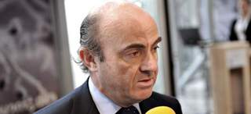
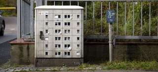
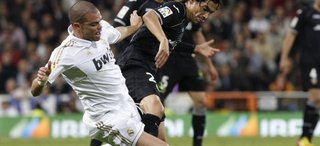
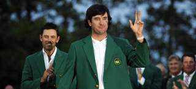
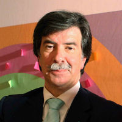
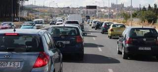
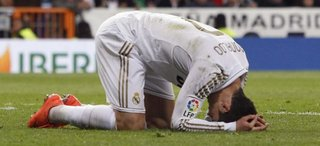
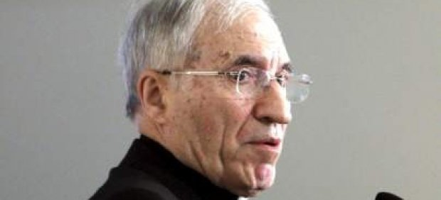
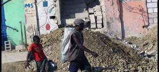

2012-04-09T09:16:42Z
Soundgarden lanza 'Live to Rise', su primer tema nuevo en 15 años
Soundgarden lanza 'Live to Rise', su primer tema nuevo en 15 años
20MINUTOS.ES / EUROPA PRESS
La banda Seattle se encuentra grabando un nuevo álbum.
El single de Soundgarden 'Live to Raise' está incluido en la banda sonora de la película 'Marvel: Los Vengadores', que verá la luz el 24 de abril.
El pasado verano la banda Soundgarden anunciaba su regreso tras 14 años separados con una gira donde resucitaron sus días de gloria grunge. Ahora, la banda de Seattle vuelve con un nuevo tema, Live to Rise, el primero desde hace tres lustros. La canción aparece en los créditos finales de la película Marvel: Los Vengadores y es el gran atractivo del álbum Avengers Assemble, una recopilación de catorce temas de música inspirada en la película que verá la luz el 24 de abril, tres días antes del estreno cinematográfico. La banda estadounidense está actualmente trabajando en su próximo disco, el primero en quince años, cuya edición está prevista para otoño. "Estamos encantados de lanzar Live to Raise, que además es la única canción nueva de la película", expresan los miembros de Soundgarden.Con más de 21 millones de discos vendidos en todo el mundo, los de Chris Cornell redefinieron el rock para toda una generación y tuvieron un revolucionario impacto en los noventa. A finales de 2010, la banda completada por Matt Cameron, Kim Thayil y Ben Shepherd anunció un nuevo comienzo.En los dos últimos años desde la reunión del grupo han participado como cabeza de cartel en festivales y han reeditado una retrospectiva titulada Telephantasm que incluía el tema inédito, Black Rain, así como su primer álbum en directo, Live on I-5.En Avengers Assemble también hay composiciones de Shinedown, Rise Against, Papa Roach, Scott Weiland, Bush, Evanescence, Theory of a Deadman, Buckcherry y Kasabian.En Internet se puede escuchar ya un adelanto del tema de Soundgarden. Escucha a continuación, en el vídeo debajo de estas líneas, un fragmento.
20MINUTOS.ES / EUROPA PRESS
- La banda Seattle se encuentra grabando un nuevo álbum.
- El single de Soundgarden 'Live to Raise' está incluido en la banda sonora de la película 'Marvel: Los Vengadores', que verá la luz el 24 de abril.
El pasado verano la banda Soundgarden anunciaba su regreso tras 14 años separados con una gira donde resucitaron sus días de gloria grunge.
Ahora, la banda de Seattle vuelve con un nuevo tema, Live to Rise, el primero desde hace tres lustros. La canción aparece en los créditos finales de la película Marvel: Los Vengadores y es el gran atractivo del álbum Avengers Assemble, una recopilación de catorce temas de música inspirada en la película que verá la luz el 24 de abril, tres días antes del estreno cinematográfico.
La banda estadounidense está actualmente trabajando en su próximo disco, el primero en quince años, cuya edición está prevista para otoño. "Estamos encantados de lanzar Live to Raise, que además es la única canción nueva de la película", expresan los miembros de Soundgarden.
Con más de 21 millones de discos vendidos en todo el mundo, los de Chris Cornell redefinieron el rock para toda una generación y tuvieron un revolucionario impacto en los noventa. A finales de 2010, la banda completada por Matt Cameron, Kim Thayil y Ben Shepherd anunció un nuevo comienzo.
En los dos últimos años desde la reunión del grupo han participado como cabeza de cartel en festivales y han reeditado una retrospectiva titulada Telephantasm que incluía el tema inédito, Black Rain, así como su primer álbum en directo, Live on I-5.
En Avengers Assemble también hay composiciones de Shinedown, Rise Against, Papa Roach, Scott Weiland, Bush, Evanescence, Theory of a Deadman, Buckcherry y Kasabian.
En Internet se puede escuchar ya un adelanto del tema de Soundgarden. Escucha a continuación, en el vídeo debajo de estas líneas, un fragmento.
2012-04-09T08:46:16Z
El Gobierno revisará las competencias autonómicas para "evitar nuevos despilfarros"
El Gobierno revisará las competencias autonómicas para "evitar nuevos despilfarros"
EFE
Para el ministro de Hacienda, Cristóbal Montoro, con las autonomías "se ha desarrollado un gran descontrol" y estas "cumplirán si o sí" con el déficit.
Anuncia un plan antifraude "que será el más duro que hayamos tenido" que limitará el uso de efectivo.
Montoro definirá con las autonomías qué servicios públicos se deben prestar en Sanidad, Educación o prestaciones sociales.
El ministro de Hacienda y Administraciones Públicas, Cristóbal Montoro, considera que el Estado de las autonomías se ha desarrollado con "un gran descontrol" y aboga por revisarlo y ordenar las competencias autonómicas para evitar "nuevos despilfarros".En una entrevista que publica este lunes el diario El Mundo, Montoro insiste en que las autonomías cumplirán "sí o sí" con los objetivos de déficit público "porque la ley les obliga" y porque saben que no tienen otra salida para volver a ganar prestigio y lograr financiación.Para Montoro, el Estado de las autonomías, es el "gran invento" de la democracia, aunque "se ha desarrollado con un gran descontrol", a lo que añade que hay que reformarlo para reequilibrar las competencias y evitar nuevos despilfarros.Lo primero que ha hecho el Gobierno en este sentido ha sido poner en marcha la Ley de Estabilidad Presupuestaria."En segundo lugar, vamos a acometer la revisión de las competencias superpuestas, el reequilibrio de las competencias y lo vamos a hacer muy pronto", afirma el ministro de Hacienda.Según Montoro, la reforma de los servicios públicos impactará en los Presupuestos de este año y explica que, en colaboración con las autonomías, se va a definir qué servicios públicos se deben prestar en Sanidad, Educación o prestaciones sociales.Esta revisión hará viable la consecución de los objetivos de déficit para las autonomías, "que tienen que renunciar a gastar mucho de lo que están haciendo", asegura Montoro, que aboga por que determinadas operaciones no sean cubiertas por la sanidad pública.Además, las comunidades "tendrán que renunciar a proyectos que hayan ido más lejos de lo que deberían", como por ejemplo, las televisiones autonómicas o las embajadas en el exterior.Respecto a la amnistía fiscal, reconoce que no es lo que más le gusta, pero que se ha aprobado porque hay que recaudar, a lo que añade que si no hubiera economía sumergida, dinero negro o dinero en los paraísos fiscales, "no podría aspirar a traerlo"."Me iba a costar muchísimo por procedimientos ordinarios. Por eso voy a acometer un plan antifraude que será realmente el más duro que hayamos tenido porque vamos a limitar el uso de efectivo. También voy a limitar algunas operaciones", señala Montoro, que avanza que los detalles de este plan se sabrán esta semana.
EFE
- Para el ministro de Hacienda, Cristóbal Montoro, con las autonomías "se ha desarrollado un gran descontrol" y estas "cumplirán si o sí" con el déficit.
- Anuncia un plan antifraude "que será el más duro que hayamos tenido" que limitará el uso de efectivo.
- Montoro definirá con las autonomías qué servicios públicos se deben prestar en Sanidad, Educación o prestaciones sociales.
El ministro de Hacienda y Administraciones Públicas, Cristóbal Montoro, considera que el Estado de las autonomías se ha desarrollado con "un gran descontrol" y aboga por revisarlo y ordenar las competencias autonómicas para evitar "nuevos despilfarros".
En una entrevista que publica este lunes el diario El Mundo, Montoro insiste en que las autonomías cumplirán "sí o sí" con los objetivos de déficit público "porque la ley les obliga" y porque saben que no tienen otra salida para volver a ganar prestigio y lograr financiación.
Para Montoro, el Estado de las autonomías, es el "gran invento" de la democracia, aunque "se ha desarrollado con un gran descontrol", a lo que añade que hay que reformarlo para reequilibrar las competencias y evitar nuevos despilfarros.
Lo primero que ha hecho el Gobierno en este sentido ha sido poner en marcha la Ley de Estabilidad Presupuestaria.
"En segundo lugar, vamos a acometer la revisión de las competencias superpuestas, el reequilibrio de las competencias y lo vamos a hacer muy pronto", afirma el ministro de Hacienda.
Según Montoro, la reforma de los servicios públicos impactará en los Presupuestos de este año y explica que, en colaboración con las autonomías, se va a definir qué servicios públicos se deben prestar en Sanidad, Educación o prestaciones sociales.
Esta revisión hará viable la consecución de los objetivos de déficit para las autonomías, "que tienen que renunciar a gastar mucho de lo que están haciendo", asegura Montoro, que aboga por que determinadas operaciones no sean cubiertas por la sanidad pública.
Además, las comunidades "tendrán que renunciar a proyectos que hayan ido más lejos de lo que deberían", como por ejemplo, las televisiones autonómicas o las embajadas en el exterior.
Respecto a la amnistía fiscal, reconoce que no es lo que más le gusta, pero que se ha aprobado porque hay que recaudar, a lo que añade que si no hubiera economía sumergida, dinero negro o dinero en los paraísos fiscales, "no podría aspirar a traerlo".
"Me iba a costar muchísimo por procedimientos ordinarios. Por eso voy a acometer un plan antifraude que será realmente el más duro que hayamos tenido porque vamos a limitar el uso de efectivo. También voy a limitar algunas operaciones", señala Montoro, que avanza que los detalles de este plan se sabrán esta semana.
2012-04-09T07:34:33Z
Iberia cancela 126 vuelos este lunes y otros 122 el viernes por la huelga de pilotos
Iberia cancela 126 vuelos este lunes y otros 122 el viernes por la huelga de pilotos
EFE
Hay 52 vuelos nacionales cancelados, 65 europeos y 9 transoceánicos.
Los pilotos han convocado huelga todos los lunes y viernes hasta el 20 de julio.
Protestan por la creación de la filial de bajo coste Iberia Express.
Facua recomienda a los afectados que reclamen indemnizaciones.
Listado de vuelos cancelados el lunes 9 y el viernes 13.
Iberia ha cancelado para hoy 126 vuelos en la primera de las 30 jornadas de huelga de pilotos del sindicato Sepla convocada para todos los lunes y viernes hasta el 20 de julio contra la creación de la aerolínea de bajo coste Iberia Express.De los 126 vuelos suspendidos, 52 corresponden a destinos nacionales, 65 a medio radio (fundamentalmente vuelos europeos) y nueve a trayectos transoceánicos.La huelga se inicia después de que no se llegase a un acuerdo tras la mediación del exministro Manuel Pimentel, que el 25 de marzo elevó al Sepla y a Iberia un documento que permitiese un acercamiento de las posturas que no fue aceptado por las partes.El primer día de huelga coincide con el lunes de Pascua, regreso de las vacaciones de Semana Santa y fiesta en algunas comunidades autónomas, y la última jornada se llevará a cabo en plenas vacaciones veraniegas, viéndose afectado el Puente de Mayo y algunas fiestas de importancia como por ejemplo el Puente de San Isidro en Madrid.El sindicato Sepla culpa a Iberia y la empresa a los pilotos de ser los responsables de no haber llegado a un acuerdo y de no haber aprovechado la mediación de Pimentel. Desde el sindicato se argumenta que la convocatoria de paros responde al boicot que ha llevado a cabo la compañía hacia el proceso de mediación que, en su opinión, ha impedido un acuerdo a pesar de las "importantes" concesiones ofrecidas por el sindicato. Iberia ha presentado una denuncia ante la Audiencia Nacional para que declare la huelga ilegal.Pérdidas millonariasPara Sepla, la creación de Iberia Express vulnera el convenio de los pilotos en varios puntos y supone una segregación de la actividad de la matriz. Por su parte, la compañía acusa al Sepla de no haber querido negociar y recuerda que Pimentel llevó a cabo la propuesta de que los copilotos de Iberia se acogieran a una excedencia y pudieran pasar a Iberia Express como comandantes, manteniendo la posibilidad de regresar luego a la matriz.Iberia Express, compañía de bajo coste de Iberia para trayectos de corto y medio radio comenzó su actividad el pasado 25 de marzo con volando a cuatro destinos nacionales, Palma de Mallorca, Alicante, Málaga y Sevilla. Durante la temporada de verano se van a incrementar los vuelos cubriéndose 17 destinos, con la previsión, por parte de la compañía, de alcanzar los 2,5 millones de pasajeros transportados en 2012.La convocatoria de las treinta jornadas de paros es continuación de las 12 realizadas en diciembre, enero y febrero, que han supuesto a la compañía una pérdida de cerca de 36 millones de euros, a una media de 3 millones de euros por cada día, por lo que esta nueva serie de huelgas podría suponer una pérdida mínima de 90 millones de euros.La segunda jornada de huelga que se llevará a cabo el próximo viernes 13, va a suponer la cancelación de 122 operaciones por parte de Iberia, de ellas, 56 son a destinos nacionales, la misma cantidad a medio radio, y 10 intercontinentales.Indemnizaciones por cancelaciónFACUA-Consumidores en Acción aconseja a los usuarios de Iberia afectados por la huelga de pilotos que reclamen indemnizaciones por los posibles perjuicios económicos que sufran.Según esta organización, no deben conformarse con la devolución del importe del billete si cancelan el contrato en lugar de modificar la fecha del vuelo. Facua recuerda que, en caso de haber contratado únicamente un vuelo de Iberia las reclamaciones deben dirigirse a la compañía aérea, pero si se trata de viajes combinados es preferible presentar las reclamaciones tanto ante la compañía como ante la agencia de viajes.En la reclamación se debe adjuntar copias de las facturas o resguardos de las compras y contrataciones que se hayan tenido que realizar durante la espera, además de los billetes de otras empresas de transportes si se han perdido las conexiones.Para eludir las indemnizaciones, las compañías suelen argumentar que la huelga es una circunstancia extraordinaria e inevitable, pero Facua precisa que no comparte ese criterio.
EFE
- Hay 52 vuelos nacionales cancelados, 65 europeos y 9 transoceánicos.
- Los pilotos han convocado huelga todos los lunes y viernes hasta el 20 de julio.
- Protestan por la creación de la filial de bajo coste Iberia Express.
- Facua recomienda a los afectados que reclamen indemnizaciones.
- Listado de vuelos cancelados el lunes 9 y el viernes 13.
Iberia ha cancelado para hoy 126 vuelos en la primera de las 30 jornadas de huelga de pilotos del sindicato Sepla convocada para todos los lunes y viernes hasta el 20 de julio contra la creación de la aerolínea de bajo coste Iberia Express.
De los 126 vuelos suspendidos, 52 corresponden a destinos nacionales, 65 a medio radio (fundamentalmente vuelos europeos) y nueve a trayectos transoceánicos.
La huelga se inicia después de que no se llegase a un acuerdo tras la mediación del exministro Manuel Pimentel, que el 25 de marzo elevó al Sepla y a Iberia un documento que permitiese un acercamiento de las posturas que no fue aceptado por las partes.
El primer día de huelga coincide con el lunes de Pascua, regreso de las vacaciones de Semana Santa y fiesta en algunas comunidades autónomas, y la última jornada se llevará a cabo en plenas vacaciones veraniegas, viéndose afectado el Puente de Mayo y algunas fiestas de importancia como por ejemplo el Puente de San Isidro en Madrid.
El sindicato Sepla culpa a Iberia y la empresa a los pilotos de ser los responsables de no haber llegado a un acuerdo y de no haber aprovechado la mediación de Pimentel. Desde el sindicato se argumenta que la convocatoria de paros responde al boicot que ha llevado a cabo la compañía hacia el proceso de mediación que, en su opinión, ha impedido un acuerdo a pesar de las "importantes" concesiones ofrecidas por el sindicato. Iberia ha presentado una denuncia ante la Audiencia Nacional para que declare la huelga ilegal.
Pérdidas millonarias
Para Sepla, la creación de Iberia Express vulnera el convenio de los pilotos en varios puntos y supone una segregación de la actividad de la matriz. Por su parte, la compañía acusa al Sepla de no haber querido negociar y recuerda que Pimentel llevó a cabo la propuesta de que los copilotos de Iberia se acogieran a una excedencia y pudieran pasar a Iberia Express como comandantes, manteniendo la posibilidad de regresar luego a la matriz.
Iberia Express, compañía de bajo coste de Iberia para trayectos de corto y medio radio comenzó su actividad el pasado 25 de marzo con volando a cuatro destinos nacionales, Palma de Mallorca, Alicante, Málaga y Sevilla. Durante la temporada de verano se van a incrementar los vuelos cubriéndose 17 destinos, con la previsión, por parte de la compañía, de alcanzar los 2,5 millones de pasajeros transportados en 2012.
La convocatoria de las treinta jornadas de paros es continuación de las 12 realizadas en diciembre, enero y febrero, que han supuesto a la compañía una pérdida de cerca de 36 millones de euros, a una media de 3 millones de euros por cada día, por lo que esta nueva serie de huelgas podría suponer una pérdida mínima de 90 millones de euros.
La segunda jornada de huelga que se llevará a cabo el próximo viernes 13, va a suponer la cancelación de 122 operaciones por parte de Iberia, de ellas, 56 son a destinos nacionales, la misma cantidad a medio radio, y 10 intercontinentales.
Indemnizaciones por cancelación
FACUA-Consumidores en Acción aconseja a los usuarios de Iberia afectados por la huelga de pilotos que reclamen indemnizaciones por los posibles perjuicios económicos que sufran.
Según esta organización, no deben conformarse con la devolución del importe del billete si cancelan el contrato en lugar de modificar la fecha del vuelo.
Facua recuerda que, en caso de haber contratado únicamente un vuelo de Iberia las reclamaciones deben dirigirse a la compañía aérea, pero si se trata de viajes combinados es preferible presentar las reclamaciones tanto ante la compañía como ante la agencia de viajes.
En la reclamación se debe adjuntar copias de las facturas o resguardos de las compras y contrataciones que se hayan tenido que realizar durante la espera, además de los billetes de otras empresas de transportes si se han perdido las conexiones.
Para eludir las indemnizaciones, las compañías suelen argumentar que la huelga es una circunstancia extraordinaria e inevitable, pero Facua precisa que no comparte ese criterio.
2012-04-09T07:24:09Z
Lorenzo, "el más listo" de la clase
Lorenzo, "el más listo" de la clase
EFE
Pedrosa no tiene problema en reconocer que Jorge eligió mejor estrategia.
El balear logró la primera victoria del año, por delante de Pedrosa y Stoner.
Remontada memorable, cuando el triunfo de Stoner parecía claro.
Blog oficial de Jorge Lorenzo. | 20 minutos, patrocinador oficial de Lorenzo.
Fotogalería Gran Premio de Catar | Toda la información del piloto.
El español Dani Pedrosa, segundo en Catar, no tuvo ningún problema en reconocer que "Jorge ha sido esta vez más listo y ha elegido una mejor estrategia". Pedrosa explicó que "al final, cuando quedaban cuatro vueltas, he intentado ponerme delante, le he pasado, pero él me ha vuelto a pasar inmediatamente y también a Casey, con lo que me he quedado estancado detrás de Casey y he perdido el contacto con Jorge". "De todas maneras, es un buen arranque de temporada e intentaremos hacerlo un poco mejor en Jerez", afirmó el piloto de Repsol Honda. "La verdad es que estoy muy contento con este resultado, porque hemos sido capaces de darle la vuelta a todos los problemas del fin de semana y después de una buena pretemporada, llegamos aquí y todo salió al revés: yo estuve resfriado y con fiebre, me caí el viernes y la calificación fue un desastre", explicó Pedrosa.Lorenzo: "He dado todo lo que tenía, toda mi energía"Por su parte, Jorge Lorenzo, pletórico por su primera victoria de la temporada, aseguró que la de Catar había sido "una carrera asombrosa, he tirado al máximo y he dado todo lo que tenía, toda mi energía y al final he conseguido la victoria".Lorenzo concretó el secreto de su victoria en el hecho de que "Casey estuvo muy fuerte al principio y abrió una cierta distancia, pero afortunadamente nosotros lo estuvimos al final". "La verdad es que estoy muy contento, creo que esta es una de las carreras más bonitas y dura de mi carrera deportiva", afirmó Lorenzo, quien comentó que, probablemente, "la clave de la victoria ha estado en que siempre he creído en ella, en que nunca he tirado la toalla y en que en todo momento he intentado mantener el ritmo aunque los neumáticos derrapaban cada vez más y deslizaban mucho", aseguró. "En un determinado momento Casey ha bajado un poco su ritmo por la razón que sea -algunos achacan esa situación a un posible síndrome compartimental en uno de sus brazos y no al desgaste de los neumáticos- y Dani ha hecho una gran carrera, no podía deshacerme de él y eso ha sido una sorpresa, pues tanto el uno como el otro han mejorado en los últimos entrenamientos libres con la electrónica o lo que sea y estaba preocupado, pues sabía que en la recta me podían pasar con facilidad", explicó Jorge Lorenzo.RemontadaCon Stoner destacado, la emoción se centraba en la lucha por la segunda posición, con un Lorenzo que intentaba reducir la distancia con respecto a Stoner y con un Pedrosa que seguía la estela de Lorenzo, pero no era capaz de meterle la rueda al mallorquín.A falta de seis vueltas para el final, Lorenzo tiró de casta y provocó que la renta de Stoner disminuyera hasta 1,2 segundos. El australiano empezó a sentir la presión y ya no pilotaba igual que en las primeras vueltas mientras veía que la distancia se reducía a medio segundo. Mientras, por detrás, Pedrosa le metía la rueda a Lorenzo y se colocaba segundo aunque el mallorquín no aguantaría mucho en la tercera plaza y volvería a rebasar al catalán.Quedaban tres giros y Lorenzo se colocaba en cabeza e intentaba abrir hueco, aprovechándose de que los neumáticos de Stoner no daban más de sí. El mallorquín se marchaba poco a poco mientras Pedrosa rebasaba a Stoner y se ponía segundo, una posición que no le costaría mantener en las últimas vueltas.
EFE
- Pedrosa no tiene problema en reconocer que Jorge eligió mejor estrategia.
- El balear logró la primera victoria del año, por delante de Pedrosa y Stoner.
- Remontada memorable, cuando el triunfo de Stoner parecía claro.
- Blog oficial de Jorge Lorenzo. | 20 minutos, patrocinador oficial de Lorenzo.
- Fotogalería Gran Premio de Catar | Toda la información del piloto.
-
El español Dani Pedrosa, segundo en Catar, no tuvo ningún problema en reconocer que "Jorge ha sido esta vez más listo y ha elegido una mejor estrategia".
Pedrosa explicó que "al final, cuando quedaban cuatro vueltas, he intentado ponerme delante, le he pasado, pero él me ha vuelto a pasar inmediatamente y también a Casey, con lo que me he quedado estancado detrás de Casey y he perdido el contacto con Jorge".
"De todas maneras, es un buen arranque de temporada e intentaremos hacerlo un poco mejor en Jerez", afirmó el piloto de Repsol Honda.
"La verdad es que estoy muy contento con este resultado, porque hemos sido capaces de darle la vuelta a todos los problemas del fin de semana y después de una buena pretemporada, llegamos aquí y todo salió al revés: yo estuve resfriado y con fiebre, me caí el viernes y la calificación fue un desastre", explicó Pedrosa.
Lorenzo: "He dado todo lo que tenía, toda mi energía"
Por su parte, Jorge Lorenzo, pletórico por su primera victoria de la temporada, aseguró que la de Catar había sido "una carrera asombrosa, he tirado al máximo y he dado todo lo que tenía, toda mi energía y al final he conseguido la victoria".
Lorenzo concretó el secreto de su victoria en el hecho de que "Casey estuvo muy fuerte al principio y abrió una cierta distancia, pero afortunadamente nosotros lo estuvimos al final".
"La verdad es que estoy muy contento, creo que esta es una de las carreras más bonitas y dura de mi carrera deportiva", afirmó Lorenzo, quien comentó que, probablemente, "la clave de la victoria ha estado en que siempre he creído en ella, en que nunca he tirado la toalla y en que en todo momento he intentado mantener el ritmo aunque los neumáticos derrapaban cada vez más y deslizaban mucho", aseguró.
"En un determinado momento Casey ha bajado un poco su ritmo por la razón que sea -algunos achacan esa situación a un posible síndrome compartimental en uno de sus brazos y no al desgaste de los neumáticos- y Dani ha hecho una gran carrera, no podía deshacerme de él y eso ha sido una sorpresa, pues tanto el uno como el otro han mejorado en los últimos entrenamientos libres con la electrónica o lo que sea y estaba preocupado, pues sabía que en la recta me podían pasar con facilidad", explicó Jorge Lorenzo.
Remontada
Con Stoner destacado, la emoción se centraba en la lucha por la segunda posición, con un Lorenzo que intentaba reducir la distancia con respecto a Stoner y con un Pedrosa que seguía la estela de Lorenzo, pero no era capaz de meterle la rueda al mallorquín.
A falta de seis vueltas para el final, Lorenzo tiró de casta y provocó que la renta de Stoner disminuyera hasta 1,2 segundos. El australiano empezó a sentir la presión y ya no pilotaba igual que en las primeras vueltas mientras veía que la distancia se reducía a medio segundo. Mientras, por detrás, Pedrosa le metía la rueda a Lorenzo y se colocaba segundo aunque el mallorquín no aguantaría mucho en la tercera plaza y volvería a rebasar al catalán.
Quedaban tres giros y Lorenzo se colocaba en cabeza e intentaba abrir hueco, aprovechándose de que los neumáticos de Stoner no daban más de sí. El mallorquín se marchaba poco a poco mientras Pedrosa rebasaba a Stoner y se ponía segundo, una posición que no le costaría mantener en las últimas vueltas.
2012-04-09T07:12:38Z
La premiada serie de televisión 'Homeland' llega a España
La premiada serie de televisión 'Homeland' llega a España
20MINUTOS.ES
La serie, ganadora de dos Globos de Oro, llega este lunes a Fox.
Es un 'thriller' sobre el poder y los servicios secretos de EE UU.
Una trama de política-ficción en la mejor tradición del cine norteamericano de los sesenta y setenta. Así es Homeland, la serie que estrena esta noche la cadena Fox (22.20 horas), ganadora de dos Globos de Oro -mejor serie dramática y mejor actriz dramática- y protagonizada por la premiada Claire Danes además de Damien Lewis, Mandy Patinkin y Morena Bacarin.Homeland es un thriller que nos adentra en los vericuetos del poder y de los servicios de inteligencia de la mano de dos personajes: un oficial estadounidense, que ha sido rescatado de su cautiverio en Irak ocho años después de ser dado por muerto; y una agente de la CIA, bipolar y meticulosa hasta límites insospechados. Ambos personajes sostienen una trama de intriga en la que nada ni nadie es lo que parece.La serie arranca cuando el oficial Nicholas Brody (Damian Lewis) vuelve a casa y es recibido con honores tras ocho años de cautiverio de Al Qaeda. Ni su mente ni su físico parecen tener secuelas de lo ocurrido, aunque la agente del FBI Carrie Mathison (Claire Danes) cree que su impecable comportamiento oculta algo. Y tratará de saber qué es.Uno de los principales atractivos de Homeland es que sabe mantener el ritmo de una narración sin dar tregua a quien la mira. El guion de la serie consigue involucrar al espectador en la trama, y lo hace con cada giro argumental de los 13 episodios de la primera temporada. Tras ellos, habrá segunda temporada.
20MINUTOS.ES
- La serie, ganadora de dos Globos de Oro, llega este lunes a Fox.
- Es un 'thriller' sobre el poder y los servicios secretos de EE UU.
Una trama de política-ficción en la mejor tradición del cine norteamericano de los sesenta y setenta. Así es Homeland, la serie que estrena esta noche la cadena Fox (22.20 horas), ganadora de dos Globos de Oro -mejor serie dramática y mejor actriz dramática- y protagonizada por la premiada Claire Danes además de Damien Lewis, Mandy Patinkin y Morena Bacarin.
Homeland es un thriller que nos adentra en los vericuetos del poder y de los servicios de inteligencia de la mano de dos personajes: un oficial estadounidense, que ha sido rescatado de su cautiverio en Irak ocho años después de ser dado por muerto; y una agente de la CIA, bipolar y meticulosa hasta límites insospechados. Ambos personajes sostienen una trama de intriga en la que nada ni nadie es lo que parece.
La serie arranca cuando el oficial Nicholas Brody (Damian Lewis) vuelve a casa y es recibido con honores tras ocho años de cautiverio de Al Qaeda. Ni su mente ni su físico parecen tener secuelas de lo ocurrido, aunque la agente del FBI Carrie Mathison (Claire Danes) cree que su impecable comportamiento oculta algo. Y tratará de saber qué es.
Uno de los principales atractivos de Homeland es que sabe mantener el ritmo de una narración sin dar tregua a quien la mira. El guion de la serie consigue involucrar al espectador en la trama, y lo hace con cada giro argumental de los 13 episodios de la primera temporada. Tras ellos, habrá segunda temporada.
2012-04-09T06:48:24Z
De Guindos descarta el copago pero propone que las rentas más altas paguen por la Sanidad
De Guindos descarta el copago pero propone que las rentas más altas paguen por la Sanidad
20MINUTOS
Economía prefiere el pago en función de la renta al copago sanitario.
Apuesta por unir a las Comunidades para hacer pedidos y ahorrar costes.
De Guindos descarta nuevas subidas de impuestos este año.
El Ministro de Economía, Luis de Guindos, asegura que los anunciados recortes en Sanidad que planea el Gobierno van más encaminados a abrir el debate de la posibilidad de establecer un pago progresivo en función de la renta que a instaurar el copago sanitario.Según el ministro, "el copago para mantener la calidad de la sanidad no es la panacea, en absoluto". De Guindos se ha mostrado más partidario de externalizar algunos servicios y de abrir el debate de la progresividad. Para el ministro, con "una sanidad pública que genera déficit y no paga a sus proveedores", urge preguntarse "si hay que proveer de todos los servicios a los que ganen 100.000 euros", ha asegurado en declaraciones a la Cadena Ser. De Guindos ha calificado como "fundamental" mantener la calidad de la Sanidad pública, para lo cual ve necesario determinar "qué es lo importante y eliminar lo supérfluo e ineficiente". Sin embargo, ha descartado que se vayan a eliminar servicios sanitarios y ha descartado el modelo catalán -cierre de hospitales por las tardes- para el resto de las comunidades autónomas.Preguntado sobre la recentralización de la Sanidad, el titular de Economía ha dicho que no se cuestiona las competencias autonómicas, aunque sí se apuesta por racionalizar el gasto, para lo cual ha adelantado la posibilidad de "coordinar las compras por parte de las comunidades autónomas". El ministro comenzaba su entrevista anunciando que España volverá a crecer economicamente en 2013, "seguro", y la terminaba descartando nuevas subidas de impuestos.Sistema financieroSobre los recientes ataques de Nicolas Sarkozy a España comparando la situación económica actual con la de Grecia el ministro aseguró que es injusto, pero disculpó al presidente francés por estar en campaña electoral.El ministro ha confiado en que bancos y cajas sigan produciendo fusiones y adquisiciones "en las próximas semanas" para reestructurar el sector y dar lugar a entidades financieras "solventes, con mejor gobierno corporativo y en disposición de dar crédito" pues, según ha denunciado, "la banca sigue contrayendo el crédito al sector privado". Asimismo, el ministro ha indicado que "se va a acelerar" el proceso de privatización de las entidades controladas por el Banco de España a través del Fondo de Reestructuración Ordenada Bancaria (FROB).
20MINUTOS
- Economía prefiere el pago en función de la renta al copago sanitario.
- Apuesta por unir a las Comunidades para hacer pedidos y ahorrar costes.
- De Guindos descarta nuevas subidas de impuestos este año.

El Ministro de Economía, Luis de Guindos, asegura que los anunciados recortes en Sanidad que planea el Gobierno van más encaminados a abrir el debate de la posibilidad de establecer un pago progresivo en función de la renta que a instaurar el copago sanitario.
Según el ministro, "el copago para mantener la calidad de la sanidad no es la panacea, en absoluto". De Guindos se ha mostrado más partidario de externalizar algunos servicios y de abrir el debate de la progresividad. Para el ministro, con "una sanidad pública que genera déficit y no paga a sus proveedores", urge preguntarse "si hay que proveer de todos los servicios a los que ganen 100.000 euros", ha asegurado en declaraciones a la Cadena Ser.
De Guindos ha calificado como "fundamental" mantener la calidad de la Sanidad pública, para lo cual ve necesario determinar "qué es lo importante y eliminar lo supérfluo e ineficiente". Sin embargo, ha descartado que se vayan a eliminar servicios sanitarios y ha descartado el modelo catalán -cierre de hospitales por las tardes- para el resto de las comunidades autónomas.
Preguntado sobre la recentralización de la Sanidad, el titular de Economía ha dicho que no se cuestiona las competencias autonómicas, aunque sí se apuesta por racionalizar el gasto, para lo cual ha adelantado la posibilidad de "coordinar las compras por parte de las comunidades autónomas".
El ministro comenzaba su entrevista anunciando que España volverá a crecer economicamente en 2013, "seguro", y la terminaba descartando nuevas subidas de impuestos.
Sistema financiero
Sobre los recientes ataques de Nicolas Sarkozy a España comparando la situación económica actual con la de Grecia el ministro aseguró que es injusto, pero disculpó al presidente francés por estar en campaña electoral.
El ministro ha confiado en que bancos y cajas sigan produciendo fusiones y adquisiciones "en las próximas semanas" para reestructurar el sector y dar lugar a entidades financieras "solventes, con mejor gobierno corporativo y en disposición de dar crédito" pues, según ha denunciado, "la banca sigue contrayendo el crédito al sector privado".
Asimismo, el ministro ha indicado que "se va a acelerar" el proceso de privatización de las entidades controladas por el Banco de España a través del Fondo de Reestructuración Ordenada Bancaria (FROB).
2012-04-09T06:42:45Z
Sony planea eliminar 10.000 empleos este año, el 6% de su plantilla, según el diario 'Nikkei'
Sony planea eliminar 10.000 empleos este año, el 6% de su plantilla, según el diario 'Nikkei'
EFE
En los nueve primeros meses del año fiscal la multinacional nipona ha perdido 2.000 millones de euros.
Sony tiene 168.000 empleados en todo el mundo y se cree que la reducción de empleos afectará a desarrollo, producción, ventas y administración.
La multinacional japonesa Sony planea recortar unos 10.000 puestos de trabajo, cerca del 6% de su plantilla, posiblemente para finales de este año, ha informado el periódico económico Nikkei.Un portavoz de Sony se limitó a señalar que por ahora no hay un anuncio oficial, aunque el Nikkei asegura, en su edición vespertina, que la mitad de la reducción provendría de la integración de operaciones en la división de productos químicos y en la de pantallas LCD.Entre abril y diciembre de 2011, primeros nueve meses del año fiscal en Japón, el gigante tecnológico perdió más de 2.000 millones de euros, y se espera que el resultado del año fiscal que concluyó el 31 de marzo refleje números rojos por cuarto ejercicio consecutivo.Por el momento se desconoce a qué países y regiones afectarán los recortes de Sony, que en la actualidad cuenta con algo más de 168.000 empleados en todo el mundo.Se espera que la reducción se lleve a cabo en varios departamentos, incluidos los relacionados con desarrollo, producción, ventas y administración, añade el diario nipón.El gigante electrónico anunció el pasado marzo su intención de vender su rama de productos químicos al Banco de Desarrollo de Japón, entidad de capital público, como parte de su estrategia de reorganizar sus divisiones para lograr una mayor sinergia, especialmente en las operaciones de electrónica.Además, el 1 de abril Sony y los también japoneses Toshiba y Hitachi unieron sus operaciones de fabricación de pantallas LCD pequeñas y medianas dirigidas a tabletas, 'smartphones' y otros dispositivos móviles.La estrategia actual del grupo que preside Kazuo Hirai pasa por acelerar su consolidación desprendiéndose de las operaciones que no estén vinculadas con su actividad principal.En su anterior programa de reestructuración, anunciado en diciembre de 2008 en medio de la crisis global desatada por el colapso de Lehman Brothers, el grupo recortó 16.000 empleos en todo el mundo y cerró cinco de sus nueve centros de producción de televisores.
EFE
- En los nueve primeros meses del año fiscal la multinacional nipona ha perdido 2.000 millones de euros.
- Sony tiene 168.000 empleados en todo el mundo y se cree que la reducción de empleos afectará a desarrollo, producción, ventas y administración.
La multinacional japonesa Sony planea recortar unos 10.000 puestos de trabajo, cerca del 6% de su plantilla, posiblemente para finales de este año, ha informado el periódico económico Nikkei.
Un portavoz de Sony se limitó a señalar que por ahora no hay un anuncio oficial, aunque el Nikkei asegura, en su edición vespertina, que la mitad de la reducción provendría de la integración de operaciones en la división de productos químicos y en la de pantallas LCD.
Entre abril y diciembre de 2011, primeros nueve meses del año fiscal en Japón, el gigante tecnológico perdió más de 2.000 millones de euros, y se espera que el resultado del año fiscal que concluyó el 31 de marzo refleje números rojos por cuarto ejercicio consecutivo.
Por el momento se desconoce a qué países y regiones afectarán los recortes de Sony, que en la actualidad cuenta con algo más de 168.000 empleados en todo el mundo.
Se espera que la reducción se lleve a cabo en varios departamentos, incluidos los relacionados con desarrollo, producción, ventas y administración, añade el diario nipón.
El gigante electrónico anunció el pasado marzo su intención de vender su rama de productos químicos al Banco de Desarrollo de Japón, entidad de capital público, como parte de su estrategia de reorganizar sus divisiones para lograr una mayor sinergia, especialmente en las operaciones de electrónica.
Además, el 1 de abril Sony y los también japoneses Toshiba y Hitachi unieron sus operaciones de fabricación de pantallas LCD pequeñas y medianas dirigidas a tabletas, 'smartphones' y otros dispositivos móviles.
La estrategia actual del grupo que preside Kazuo Hirai pasa por acelerar su consolidación desprendiéndose de las operaciones que no estén vinculadas con su actividad principal.
En su anterior programa de reestructuración, anunciado en diciembre de 2008 en medio de la crisis global desatada por el colapso de Lehman Brothers, el grupo recortó 16.000 empleos en todo el mundo y cerró cinco de sus nueve centros de producción de televisores.
2012-04-09T06:11:26Z
El TSJM anula la ordenanza municipal que permitía multar sin parar a los conductores
El TSJM anula la ordenanza municipal que permitía multar sin parar a los conductores
M. TOLEDO
La ley estatal lo autoriza si parar el vehículo puede originar "riesgo".
El Ayuntamiento estudia presentar un recurso ante el Supremo.
Encontrarse una multa en el buzón por una infracción cometida meses atrás está a la orden del día entre los conductores madrileños. En muchos casos, esas sanciones no van acompañadas por ninguna fotografía que pruebe la infracción o identifique al vehículo. Simplemente, se basa en la palabra del agente que capta la falta, ya que la Ordenanza de Movilidad de la capital permitía que sus agentes impusieran multas sin parar a los conductores. Pero ahora un juez del TSJM ha anulado un artículo de esa norma, lo que obliga a los policías a notificar la sanción en el acto si no existen pruebas. La sentencia se notificó a las partes el pasado martes 3 de abril, aunque se hizo pública ayer. En ella, el juez acepta parcialmente un recurso interpuesto por Automovilistas Europeos Asociados (AEA) contra la ordenanza, modificada por el Ayuntamiento de Madrid en 2010. Concretamente, anula "la modificación del artículo 99, d) por carecer de cobertura legal" y contravenir la Ley de Seguridad Vial, de rango superior.La ordenanza permitía notificar la denuncia con posterioridad en caso de que el agente se encontrase "realizando labores de regulación del tráfico" y careciese de "medios para perseguir al infractor". Pero la ley estatal solo lo autoriza si "la detención del vehículo puede originar riesgo", si "el vehículo está estacionado", y si existen "medios de captación de imágenes que permitan su identificación".La asociación AEA pedirá a la alcaldesa "la revisión y cancelación de 600.000 expedientes sancionadores" que no se notificaron en el acto. Sin embargo, el Ayuntamiento estudia la presentación de un recurso ante el Tribunal Supremo.
M. TOLEDO
- La ley estatal lo autoriza si parar el vehículo puede originar "riesgo".
- El Ayuntamiento estudia presentar un recurso ante el Supremo.
Encontrarse una multa en el buzón por una infracción cometida meses atrás está a la orden del día entre los conductores madrileños. En muchos casos, esas sanciones no van acompañadas por ninguna fotografía que pruebe la infracción o identifique al vehículo. Simplemente, se basa en la palabra del agente que capta la falta, ya que la Ordenanza de Movilidad de la capital permitía que sus agentes impusieran multas sin parar a los conductores. Pero ahora un juez del TSJM ha anulado un artículo de esa norma, lo que obliga a los policías a notificar la sanción en el acto si no existen pruebas.
La sentencia se notificó a las partes el pasado martes 3 de abril, aunque se hizo pública ayer. En ella, el juez acepta parcialmente un recurso interpuesto por Automovilistas Europeos Asociados (AEA) contra la ordenanza, modificada por el Ayuntamiento de Madrid en 2010. Concretamente, anula "la modificación del artículo 99, d) por carecer de cobertura legal" y contravenir la Ley de Seguridad Vial, de rango superior.
La ordenanza permitía notificar la denuncia con posterioridad en caso de que el agente se encontrase "realizando labores de regulación del tráfico" y careciese de "medios para perseguir al infractor". Pero la ley estatal solo lo autoriza si "la detención del vehículo puede originar riesgo", si "el vehículo está estacionado", y si existen "medios de captación de imágenes que permitan su identificación".
La asociación AEA pedirá a la alcaldesa "la revisión y cancelación de 600.000 expedientes sancionadores" que no se notificaron en el acto. Sin embargo, el Ayuntamiento estudia la presentación de un recurso ante el Tribunal Supremo.
2012-04-09T06:06:46Z
Evol, el 'arquitecto' callejero que diseña edificios en miniatura
Evol, el 'arquitecto' callejero que diseña edificios en miniatura
HELENA CELDRÁN
El artista alemán usa plantillas para crear pequeños modelos de edificios de viviendas en bloques de cemento y registros elécticos.
Son un homenaje a los bloques residenciales de la parte soviética de Berlín, ahora de moda y en proceso de aburguesamiento.
Una galería expone también trabajos de estudio, donde Evol aprovecha planchas de metal y cartones para fabricar fachadas.
Las construcciones en miniatura lo han convertido en uno de los artistas urbanos más populares de su país. Evol (Heilbronn-Alemania, 1972), afincado en Berlín, crea sólo con plantillas, en un estilo realista, bloques de viviendas sucios y sombríos.Sus intervenciones se mezclan con el ambiente de la calle. Adornando la superficie gris de un registro eléctrico con monótonas líneas de ventanas, balcones, cables y antenas parabólicas, crea la ilusión de que incluso el elemento menos agraciado del paisaje de una ciudad puede dar que pensar, por ejemplo convirtiéndose en un edificio en el que parecen vivir decenas de familias diminutas.La Jonathan Levine Gallery de Nueva York inaugura Repeat Offender (Delincuente reincidente), una colección del trabajo del artista, que expone por primera vez en los Estados Unidos. La muestra exhibe trabajos de estudio, plantillas en cartón y metal. Evol selecciona la materia prima cuidadosamente, usa como lienzos chapas usadas y cajas de mudanzas para que sus bloques de viviendas en miniautura representen con más fuerza la calidad de las casas baratas berlinesas."Las superficies limpias no me dicen nada"Con las ilusiones arquitectónicas de las obras refleja la decadencia urbana y recrea el aspecto original de las viviendas de la parte este de Berlín, el lado excomunista de la capital alemana, que se ha aburguesado y ha visto incrementados los precios de los pisos tras la caída del muro. "Las superficies limpias no me dicen nada, así que documentar estas marcas es un proceso de memoria visual para recordar el encanto de un lugar que pronto será pintado de nuevo", dice el artista con cierto resquemor por la renovación de los escenarios de aspecto soviético.En el exterior Evol convierte en superficie de trabajo las columnas de cemento, los registros y otros elementos callejeros. La muestra incluye fotografías de uno de estos grupos de construcciones que recrean en silencio la superficie de una ciudad.Caspar David Friedrich Stadt (La ciudad de Caspar David Friedrich) es un proyecto que el artista realizó en un matadero abandonado de Dresden y bautizó en honor al pintor alemán romántico, famoso por sus hermosos paisajes naturales. La pequeña urbe está compuesta por bloques de cemento. El suelo sucio y el abandono convierten a los edificios en el escenario vacío de una película de terror.
HELENA CELDRÁN
- El artista alemán usa plantillas para crear pequeños modelos de edificios de viviendas en bloques de cemento y registros elécticos.
- Son un homenaje a los bloques residenciales de la parte soviética de Berlín, ahora de moda y en proceso de aburguesamiento.
- Una galería expone también trabajos de estudio, donde Evol aprovecha planchas de metal y cartones para fabricar fachadas.

Las construcciones en miniatura lo han convertido en uno de los artistas urbanos más populares de su país. Evol (Heilbronn-Alemania, 1972), afincado en Berlín, crea sólo con plantillas, en un estilo realista, bloques de viviendas sucios y sombríos.
Sus intervenciones se mezclan con el ambiente de la calle. Adornando la superficie gris de un registro eléctrico con monótonas líneas de ventanas,
balcones, cables y antenas parabólicas, crea la ilusión de que incluso el elemento menos agraciado del paisaje de una ciudad puede dar que pensar, por ejemplo convirtiéndose en un edificio en el que parecen vivir decenas de familias diminutas.
La Jonathan Levine Gallery de Nueva York inaugura Repeat Offender (Delincuente reincidente), una colección del trabajo del artista, que expone por primera vez en los Estados Unidos.
La muestra exhibe trabajos de estudio, plantillas en cartón y metal. Evol selecciona la materia prima cuidadosamente, usa como lienzos chapas usadas y cajas de mudanzas para que sus bloques de viviendas en miniautura representen con más fuerza la calidad de las casas baratas berlinesas.
"Las superficies limpias no me dicen nada"
Con las ilusiones arquitectónicas de las obras refleja la decadencia urbana y recrea el aspecto original de las viviendas de la parte este de Berlín, el lado excomunista de la capital alemana, que se ha aburguesado y ha visto incrementados los precios de los pisos tras la caída del muro. "Las superficies limpias no me dicen nada, así que documentar estas marcas es un proceso de memoria visual para recordar el encanto de un lugar que pronto será pintado de nuevo", dice el artista con cierto resquemor por la renovación de los escenarios de aspecto soviético.
En el exterior Evol convierte en superficie de trabajo las columnas de cemento, los registros y otros elementos callejeros. La muestra incluye fotografías de uno de estos grupos de construcciones que recrean en silencio la superficie de una ciudad.
Caspar David Friedrich Stadt (La ciudad de Caspar David Friedrich) es un proyecto que el artista realizó en un matadero abandonado de Dresden y bautizó en honor al pintor alemán romántico, famoso por sus hermosos paisajes naturales. La pequeña urbe está compuesta por bloques de cemento. El suelo sucio y el abandono convierten a los edificios en el escenario vacío de una película de terror.
2012-04-09T05:46:59Z
Pepe le pegó una patada a Arbeloa pensando que era Piatti
Pepe le pegó una patada a Arbeloa pensando que era Piatti
20MINUTOS.ES / VÍDEO: YOUTUBE
El valencianista hizo una entrada al central del Ral Madrid, que se quedó en el suelo revolcándose y doliéndose por la falta recibida.
En ese momento, llegó Arbeloa y Pepe le pisó la rodilla.
El central portugués se pensó que era Piatti quien le reclamaba.
Pepe volvió a protagonizar una de las imágenes de la jornada.El central del Real Madrid a punto estuvo de lesionar a su propio compañero Arbeloa, en una acción durante la segunda parte del Real Madrid-Valencia.Tras una falta del valencianista Piatti sobre Pepe, el defensa portugués se quedó en el suelo doliéndose. En ese momento, su compañero de equipo Álvaro Arbeloa se acercó hasta su posición para que se levantase rápido y no perdiese tiempo. Instante en el que se produjo la acción 'comica': Pepe, que se encontraba en el suelo, soltó una patada a su propio compañero, al que pudo lesionar pisándole la rodilla.El central del Madrid, sin campo de visión, pensó que Arbeloa era Piatti reclamándole algo relacionado con la falta. Finalmente, fue el propio lateral quien ayudó a levantarse del suelo al portugués.
20MINUTOS.ES / VÍDEO: YOUTUBE
- El valencianista hizo una entrada al central del Ral Madrid, que se quedó en el suelo revolcándose y doliéndose por la falta recibida.
- En ese momento, llegó Arbeloa y Pepe le pisó la rodilla.
- El central portugués se pensó que era Piatti quien le reclamaba.

Pepe volvió a protagonizar una de las imágenes de la jornada.
El central del Real Madrid a punto estuvo de lesionar a su propio compañero Arbeloa, en una acción durante la segunda parte del Real Madrid-Valencia.
Tras una falta del valencianista Piatti sobre Pepe, el defensa portugués se quedó en el suelo doliéndose. En ese momento, su compañero de equipo Álvaro Arbeloa se acercó hasta su posición para que se levantase rápido y no perdiese tiempo. Instante en el que se produjo la acción 'comica': Pepe, que se encontraba en el suelo, soltó una patada a su propio compañero, al que pudo lesionar pisándole la rodilla.
El central del Madrid, sin campo de visión, pensó que Arbeloa era Piatti reclamándole algo relacionado con la falta. Finalmente, fue el propio lateral quien ayudó a levantarse del suelo al portugués.
2012-04-09T05:02:18Z
El 'pegador' zurdo Bubba Watson llega a la cima en Augusta
El 'pegador' zurdo Bubba Watson llega a la cima en Augusta
EFE
El jugador, de 33 años, no paró de llorar desde que embocó el último 'putt'.
Disputó con el sudafricano Oosthuizen, campeón del Open Británico de 2010.
Es el quinto triunfo de un jugador zurdo en las últimas 11 ediciones.
Bubba Watson ha atravesado la semana más feliz de su vida: hace dos semanas él y su mujer, Angie, adoptaron un niño con un mes de vida y este domingo se enfundó en la Chaqueta más preciada del golf mundial, en Augusta y tras el duelo final del desempate.El jugador de Bagdad (Florida), de 33 años, no paró de llorar desde que embocó el último 'putt', el ganador, en el segundo hoyo de la muerte súbita que disputó con el sudafricano Louis Oosthuizen, el campeón del Open Británico de 2010.Bubba fue hombro por hombro secándose las lágrimas. Desde ahora estará de por vida jugando el Masters. El club le da la bienvenida eterna al 'pegador' más potente del Tour estadounidense, famoso por su 'driver' de color rosa, heterodoxo también en sus formas y gustos pero un golfista de pies a cabeza. El triunfo de Watson -cuarto en su palmarés- es el quinto de un jugador zurdo en las últimas 11 ediciones. Le precedieron el canadiense Mike Weir (2003) y los tres títulos de Phil Mickelson (2004, 2006 y 2010).Poco antes de los sollozos incontrolables de Bubba, su 'aproach' en el segundo hoyo del desempate bajo los árboles, tras su escapada desde el 'tee', fue el segundo mejor golpe de la jornada y del torneo.
EFE
- El jugador, de 33 años, no paró de llorar desde que embocó el último 'putt'.
- Disputó con el sudafricano Oosthuizen, campeón del Open Británico de 2010.
- Es el quinto triunfo de un jugador zurdo en las últimas 11 ediciones.

Bubba Watson ha atravesado la semana más feliz de su vida: hace dos semanas él y su mujer, Angie, adoptaron un niño con un mes de vida y este domingo se enfundó en la Chaqueta más preciada del golf mundial, en Augusta y tras el duelo final del desempate.
El jugador de Bagdad (Florida), de 33 años, no paró de llorar desde que embocó el último 'putt', el ganador, en el segundo hoyo de la muerte súbita que disputó con el sudafricano Louis Oosthuizen, el campeón del Open Británico de 2010.
Bubba fue hombro por hombro secándose las lágrimas. Desde ahora estará de por vida jugando el Masters. El club le da la bienvenida eterna al 'pegador' más potente del Tour estadounidense, famoso por su 'driver' de color rosa, heterodoxo también en sus formas y gustos pero un golfista de pies a cabeza.
El triunfo de Watson -cuarto en su palmarés- es el quinto de un jugador zurdo en las últimas 11 ediciones. Le precedieron el canadiense Mike Weir (2003) y los tres títulos de Phil Mickelson (2004, 2006 y 2010).
Poco antes de los sollozos incontrolables de Bubba, su 'aproach' en el segundo hoyo del desempate bajo los árboles, tras su escapada desde el 'tee', fue el segundo mejor golpe de la jornada y del torneo.
2012-04-09T01:43:27Z
Ascienden a 38 los muertos tras un atentado junto a dos iglesias en Nigeria
Ascienden a 38 los muertos tras un atentado junto a dos iglesias en Nigeria
EFE / VÍDEO: ATLAS
En las iglesias se celebraba el Domingo de Resurrección.
Además, 35 personas resultaron heridas de gravedad.
Se cree que el ataque tenía como objetivo dos iglesias evangélicas.
Al menos 38 personas perdieron este domingo la vida y 35 resultaron heridas de gravedad en un atentado junto a dos iglesias de Kaduna (mitad norte de Nigeria), donde se celebraba el Domingo de Resurrección, informó el Servicio de Gestión de Emergencias del Estado de Kaduna (SEMA) al diario local Leadership.El atentado perpetrado por dos coches bomba se produjo en la zona de Sardauna Cresent, en torno a las 9.30 GMT, en una zona comercial, aunque se cree que el ataque tenía como objetivo la Iglesia Evangélica de África Occidental y la Iglesia de las Asambleas de Dios, a 500 metros del lugar del incidente.El comisario de Kaduna, Gingiri Abubakar, explicó que los terroristas estaban siendo perseguidos por detectives de la Policía."De repente uno de los vehículos colisionó contra el otro, lo que provocó la explosión de los artefactos en Sardauna Crescent", afirmó Abubakar, según publicó el diario nigeriano Leadership.Sin autoría claraAún se desconoce la autoría del atentado, aunque EEUU y el Reino Unido alertaron esta semana de que la secta islamista Boko Haram, responsable de los atentados de Navidad de 2011, que causaron al menos 40 muertos, planeaban ataques contra comunidades cristianas durante la Semana Santa.Boko Haram lucha por instaurar la ley islámica ("sharia") en el norte de Nigeria, de mayoría musulmana, mientras que el sur del país es predominantemente cristiano.El estado de Kaduna, en la mitad norte del país, está dividido a partes iguales entre las comunidades de ambas religiones.Con unos 150 millones de habitantes integrados en más de 200 grupos tribales, Nigeria, el país más poblado de África, sufre múltiples tensiones por sus profundas diferencias políticas, religiosas y territoriales.
EFE / VÍDEO: ATLAS
- En las iglesias se celebraba el Domingo de Resurrección.
- Además, 35 personas resultaron heridas de gravedad.
- Se cree que el ataque tenía como objetivo dos iglesias evangélicas.
Al menos 38 personas perdieron este domingo la vida y 35 resultaron heridas de gravedad en un atentado junto a dos iglesias de Kaduna (mitad norte de Nigeria), donde se celebraba el Domingo de Resurrección, informó el Servicio de Gestión de Emergencias del Estado de Kaduna (SEMA) al diario local Leadership.
El atentado perpetrado por dos coches bomba se produjo en la zona de Sardauna Cresent, en torno a las 9.30 GMT, en una zona comercial, aunque se cree que el ataque tenía como objetivo la Iglesia Evangélica de África Occidental y la Iglesia de las Asambleas de Dios, a 500 metros del lugar del incidente.
El comisario de Kaduna, Gingiri Abubakar, explicó que los terroristas estaban siendo perseguidos por detectives de la Policía.
"De repente uno de los vehículos colisionó contra el otro, lo que provocó la explosión de los artefactos en Sardauna Crescent", afirmó Abubakar, según publicó el diario nigeriano Leadership.
Sin autoría clara
Aún se desconoce la autoría del atentado, aunque EEUU y el Reino Unido alertaron esta semana de que la secta islamista Boko Haram, responsable de los atentados de Navidad de 2011, que causaron al menos 40 muertos, planeaban ataques contra comunidades cristianas durante la Semana Santa.
Boko Haram lucha por instaurar la ley islámica ("sharia") en el norte de Nigeria, de mayoría musulmana, mientras que el sur del país es predominantemente cristiano.
El estado de Kaduna, en la mitad norte del país, está dividido a partes iguales entre las comunidades de ambas religiones.
Con unos 150 millones de habitantes integrados en más de 200 grupos tribales, Nigeria, el país más poblado de África, sufre múltiples tensiones por sus profundas diferencias políticas, religiosas y territoriales.
2012-04-08T21:58:16Z
Emilio Butragueño: "Hemos estado un poquito ansiosos"
Emilio Butragueño: "Hemos estado un poquito ansiosos"
EFE
Empate sin goles entre Real Madrid y Valencia.
El director de Relaciones Institucionales del club blanco recordó que ante el Atlético de Madrid tienen "otra final".
Emilio Butragueño, director de Relaciones Institucionales del Real Madrid, consideró que los jugadores de Jose Mourinho habían estado "un poquito ansiosos" en los últimos metros, lo que pudo influir en el 0-0 contra el Valencia que reduce a cuatro puntos la ventaja sobre el Barcelona. Butragueño, quien admitió que no esperaban este tropiezo, consideró que ese ansia "por querer marcar" también se notó en la precipitación en el último pase, así como ensalzó la labor del meta valencianista Vicente Guaita, del que aseguró que hizo un "partido soberbio". Tras insistir en la precipitación y en la falta de fluidez, comentó que el Valencia cuajó un buen encuentro, en el que tuvo sus ocasiones, y recordó que también Iker Casillas tuvo "tres intervenciones brillantes". Butragueño recordó que el miércoles, en el derbi ante el Atlético de Madrid en el Vicente Calderón, el Real Madrid tiene "otra final". "Hay que seguir, no contábamos con ello (el empate) pero sabíamos que podía suceder", dijo en declaraciones a Canal Plus. "Nuestro calendario, sobre todo fuera de casa, es muy difícil, pero es el momento de demostrar nuestra capacidad", afirmó el dirigente madridista, quien advirtió que el equipo de Mourinho ya sacó con nota el teórico difícil desplazamiento a Pamplona. "El miércoles tenemos que ir a ganar al Vicente Calderón, sabiendo que nos enfrentaremos a un rival muy motivado que ha crecido mucho con Simeone en el banquillo", apostilló. "Seguimos teniendo ventaja, ahora de cuatro puntos, y el partido del miércoles va a ser fundamental para retomar el aire y que el equipo se de un impulso anímico. Es muy importante. Luego vienen el Sporting y el Bayern. Es un mes terrible, pero a la vez muy ilusionante. Para los jugadores es maravilloso jugar este tipo de partidos", manifestó.
EFE
- Empate sin goles entre Real Madrid y Valencia.
- El director de Relaciones Institucionales del club blanco recordó que ante el Atlético de Madrid tienen "otra final".

Emilio Butragueño, director de Relaciones Institucionales del Real Madrid, consideró que los jugadores de Jose Mourinho habían estado "un poquito ansiosos" en los últimos metros, lo que pudo influir en el 0-0 contra el Valencia que reduce a cuatro puntos la ventaja sobre el Barcelona.
Butragueño, quien admitió que no esperaban este tropiezo, consideró que ese ansia "por querer marcar" también se notó en la precipitación en el último pase, así como ensalzó la labor del meta valencianista Vicente Guaita, del que aseguró que hizo un "partido soberbio".
Tras insistir en la precipitación y en la falta de fluidez, comentó que el Valencia cuajó un buen encuentro, en el que tuvo sus ocasiones, y recordó que también Iker Casillas tuvo "tres intervenciones brillantes".
Butragueño recordó que el miércoles, en el derbi ante el Atlético de Madrid en el Vicente Calderón, el Real Madrid tiene "otra final". "Hay que seguir, no contábamos con ello (el empate) pero sabíamos que podía suceder", dijo en declaraciones a Canal Plus.
"Nuestro calendario, sobre todo fuera de casa, es muy difícil, pero es el momento de demostrar nuestra capacidad", afirmó el dirigente madridista, quien advirtió que el equipo de Mourinho ya sacó con nota el teórico difícil desplazamiento a Pamplona.
"El miércoles tenemos que ir a ganar al Vicente Calderón, sabiendo que nos enfrentaremos a un rival muy motivado que ha crecido mucho con Simeone en el banquillo", apostilló.
"Seguimos teniendo ventaja, ahora de cuatro puntos, y el partido del miércoles va a ser fundamental para retomar el aire y que el equipo se de un impulso anímico. Es muy importante. Luego vienen el Sporting y el Bayern. Es un mes terrible, pero a la vez muy ilusionante. Para los jugadores es maravilloso jugar este tipo de partidos", manifestó.
2012-04-09T08:58:19Z
El Sepla afirma que Iberia Express volaría "gratis" con el sueldo actual de once directivos
El Sepla afirma que Iberia Express volaría "gratis" con el sueldo actual de once directivos
EP
El Sepla denuncia que a Iberia no le interesan "ni Barajas, ni ahorrar".
"Con el actual sueldo de once directivos de la aerolínea se podrían contratar hasta 460 pilotos", denuncia el sindicato.
Iberia cancela 126 vuelos este lunes por la huelga de pilotos.
El sindicato de pilotos Sepla ha criticado este lunes que a Iberia no le interesan "ni el aeropuerto de Barajas ni la españolidad de Iberia ni ahorrar", ya que, según la propuesta de ahorro que hizo la sección sindical "con el actual sueldo de once directivos de la aerolínea se podrían contratar hasta 460 pilotos", por lo que la 'low cost' "podría volar gratis". En declaraciones a Cadena Cope, el jefe sindical de los pilotos, Justo Peral, ha asegurado que se trata de "la primera vez que en Iberia los directivos tienen esos salarios"."Además, en la mediación, el Gobierno ha comprobado que los ahorros que ofrecían los pilotos triplicaban los de Iberia Express y el propio Gobierno admitió que si la compañía se llevaba la mitad de aviones se haría un ERE a la mitad de la plantilla", ha agregado.Estas críticas coinciden con la nueva jornada de huelga que cancelará 126 vuelos este lunes y 122 el próximo viernes, tanto nacionales, europeos como internacionales.Retorno de la huelgaEl retorno a la huelga se produce tras el fracaso de la mediación de Manuel Pimentel, cuyo anuncio propició la desconvocatoria de los 24 paros que habían sido convocados por el colectivo y que afectaban a fechas claves de Semana Santa y Puente de Mayo. El nuevo anuncio de paros afecta a la operación retorno de Semana Santa al coincidir el primer día de huelga, el 9 de abril, con el lunes de Pascua, festivo en algunas CCAA, como Cataluña, Baleares y Comunidad Valenciana.También hay un paro el 27 de abril, en plena salida del Puente de Mayo, y extiende las protestas hasta la temporada estival, con fechas en junio y julio.El colectivo justifica su retorno a los paros "ante la falta de acuerdo en la mediación propuesta por el Gobierno" y por "el boicot" que ha ejercicio Iberia sobre el proceso que ha impedido conseguir dicho acuerdo "a pesar de las importantes concesiones ofrecidas por Sepla".
EP
- El Sepla denuncia que a Iberia no le interesan "ni Barajas, ni ahorrar".
- "Con el actual sueldo de once directivos de la aerolínea se podrían contratar hasta 460 pilotos", denuncia el sindicato.
- Iberia cancela 126 vuelos este lunes por la huelga de pilotos.
El sindicato de pilotos Sepla ha criticado este lunes que a Iberia no le interesan "ni el aeropuerto de Barajas ni la españolidad de Iberia ni ahorrar", ya que, según la propuesta de ahorro que hizo la sección sindical "con el actual sueldo de once directivos de la aerolínea se podrían contratar hasta 460 pilotos", por lo que la 'low cost' "podría volar gratis".
En declaraciones a Cadena Cope, el jefe sindical de los pilotos, Justo Peral, ha asegurado que se trata de "la primera vez que en Iberia los directivos tienen esos salarios".
"Además, en la mediación, el Gobierno ha comprobado que los ahorros que ofrecían los pilotos triplicaban los de Iberia Express y el propio Gobierno admitió que si la compañía se llevaba la mitad de aviones se haría un ERE a la mitad de la plantilla", ha agregado.
Estas críticas coinciden con la nueva jornada de huelga que cancelará 126 vuelos este lunes y 122 el próximo viernes, tanto nacionales, europeos como internacionales.
Retorno de la huelga
El retorno a la huelga se produce tras el fracaso de la mediación de Manuel Pimentel, cuyo anuncio propició la desconvocatoria de los 24 paros que habían sido convocados por el colectivo y que afectaban a fechas claves de Semana Santa y Puente de Mayo.
El nuevo anuncio de paros afecta a la operación retorno de Semana Santa al coincidir el primer día de huelga, el 9 de abril, con el lunes de Pascua, festivo en algunas CCAA, como Cataluña, Baleares y Comunidad Valenciana.
También hay un paro el 27 de abril, en plena salida del Puente de Mayo, y extiende las protestas hasta la temporada estival, con fechas en junio y julio.
El colectivo justifica su retorno a los paros "ante la falta de acuerdo en la mediación propuesta por el Gobierno" y por "el boicot" que ha ejercicio Iberia sobre el proceso que ha impedido conseguir dicho acuerdo "a pesar de las importantes concesiones ofrecidas por Sepla".
2012-04-09T07:43:35Z
El borrador de la Renta se puede pedir y confirmar desde el martes
El borrador de la Renta se puede pedir y confirmar desde el martes
EUROPA PRESS
El borrador se puede pedir y confirmar por vía telemática desde el martes hasta el próximo 2 de julio.
La Campaña de Renta 2011 comienza oficialmente el 3 de mayo.
Aumentan las deducciones por compras u obras en la vivienda.
Los contribuyentes podrán solicitar el borrador o los datos fiscales de la declaración del Impuesto sobre la Renta de las Personas Físicas (IRPF) correspondiente al año 2011 a partir del martes 10 de abril y hasta el próximo 2 de julio de 2012, según la Orden del Ministerio de Economía y Hacienda. Además, la confirmación de dicho borrador o datos fiscales también podrá efectuarse, cualquiera que sea el resultado, a partir de esa misma fecha y hasta el 2 de julio de este año, ambos días incluidos.El borrador se podrá obtener y confirmar por vía telemática, a través de la sede electrónica de la Agencia Tributaria, aunque Hacienda enviará por correo ordinario el borrador los contribuyentes que no hayan recurrido a esta vía a partir del 3 de mayo, el día que arranca oficialmente la Campaña de Renta 2011.Una vez que se reciba el borrador, se debe revisar, pudiendo en su caso completar o modificar la información recogida en el mismo antes de proceder a su confirmación. El plazo para la confirmación por vía telemática arranca también el 10 de abril y concluye el 2 de julio, aunque si se hace por otras vías el plazo comienza el 3 de mayo.Si el resultado del borrador arroja una cantidad a ingresar y su pago se domicilia en cuenta, la confirmación o suscripción del mismo no podrá realizarse más tarde del 27 de junio, salvo si se domicilia solo el segundo pago.Como todos los años, podrán solicitar el borrador los contribuyentes que sólo tengan rendimientos del trabajo, rendimientos del capital mobiliario con retención o ingreso a cuenta, Letras del Tesoro, imputación de rentas inmobiliarias de dos inmuebles como máximo, ganancias patrimoniales sometidas a retención o ingreso a cuenta y subvenciones para la adquisición de vivienda habitual.Novedades de la campañaComo es tradicional cada año, con la solicitud del borrador comienza la Campaña de la Renta de 2011, que se extenderá entre el 3 de mayo y el 2 de julio. Una de las novedades es que se eleva la base máxima a 9.040 euros en la deducción por inversión en vivienda habitual en los supuestos de adquisición o rehabilitación de vivienda y para las cantidades depositadas en cuenta vivienda, y a 12.080 euros en el caso de obras e instalaciones de adecuación de la vivienda habitual por razón de discapacidad.Además, hay una serie de cambios en la deducción por obras de mejora en la vivienda habitual, puesto que no se limitará a la vivienda habitual y contará con un colectivo mayor de potenciales beneficiarios tras elevar el límite anual de base imponible para acceder a la misma de 53.007,20 a 71.007,20 euros. Además, se mejora la cuantía de la deducción elevándose del 10% al 20% el porcentaje de deducción, y de 4.000 a 6.750 euros, la base anual máxima de deducción.Asimismo, se han suprimido las deducciones por doble imposición de dividendos pendientes de aplicar al haber transcurrido el plazo límite de cuatro años desde 2006.Acaban las alertas por SMSEn cuanto a las novedades efectuadas en el modelo de declaración para mejorar la gestión del impuesto, cabe destacar la supresión de la posibilidad de suscribirse a las alertas SMS a través del modelo, ya que a partir de 2012 las suscripciones a este servicio solo podrán realizarse por Internet.Además, en el apartado relativo al borrador, el contribuyente no tendrá que cumplimentar las casillas del mismo para obtener su borrador o datos fiscales del ejercicio 2012, ya que podrá visualizarlos a través de Internet desde el primer día de la campaña y solo tendrá que cumplimentar las casillas de este apartado en el caso de que desee recibirlos por correo ordinario.Quiénes tienen que declararEn cualquier caso, se mantiene en 22.000 euros los rendimientos íntegros de los contribuyentes que no están obligados a presentar la declaración de la renta cuando procedan de un sólo pagador (si tienen más de un pagador la suma de las cantidades percibidas del segundo y restantes no puede superar los 1.500 euros), y en 11.200 euros la renta máxima anual que exime de esta obligación a los contribuyentes que tienen más de un pagador y siempre que la suma del segundo o de los restantes pagadores sea superior a 1.500 euros.Sí están obligados a declarar aquellos contribuyentes que aún teniendo rentas del trabajo inferiores a los 22.000 euros anuales, se hayan aplicado deducciones por inversión en vivienda, por cuenta ahorro-empresa, por doble imposición internacional, así como reducciones en la base imponible por aportaciones a planes de pensiones, a mutualidades de previsión social, a planes de previsión asegurados o a patrimonios protegidos de las personas con discapacidad.
EUROPA PRESS
- El borrador se puede pedir y confirmar por vía telemática desde el martes hasta el próximo 2 de julio.
- La Campaña de Renta 2011 comienza oficialmente el 3 de mayo.
- Aumentan las deducciones por compras u obras en la vivienda.
Los contribuyentes podrán solicitar el borrador o los datos fiscales de la declaración del Impuesto sobre la Renta de las Personas Físicas (IRPF) correspondiente al año 2011 a partir del martes 10 de abril y hasta el próximo 2 de julio de 2012, según la Orden del Ministerio de Economía y Hacienda. Además, la confirmación de dicho borrador o datos fiscales también podrá efectuarse, cualquiera que sea el resultado, a partir de esa misma fecha y hasta el 2 de julio de este año, ambos días incluidos.
El borrador se podrá obtener y confirmar por vía telemática, a través de la sede electrónica de la Agencia Tributaria, aunque Hacienda enviará por correo ordinario el borrador los contribuyentes que no hayan recurrido a esta vía a partir del 3 de mayo, el día que arranca oficialmente la Campaña de Renta 2011.
Una vez que se reciba el borrador, se debe revisar, pudiendo en su caso completar o modificar la información recogida en el mismo antes de proceder a su confirmación. El plazo para la confirmación por vía telemática arranca también el 10 de abril y concluye el 2 de julio, aunque si se hace por otras vías el plazo comienza el 3 de mayo.
Si el resultado del borrador arroja una cantidad a ingresar y su pago se domicilia en cuenta, la confirmación o suscripción del mismo no podrá realizarse más tarde del 27 de junio, salvo si se domicilia solo el segundo pago.
Como todos los años, podrán solicitar el borrador los contribuyentes que sólo tengan rendimientos del trabajo, rendimientos del capital mobiliario con retención o ingreso a cuenta, Letras del Tesoro, imputación de rentas inmobiliarias de dos inmuebles como máximo, ganancias patrimoniales sometidas a retención o ingreso a cuenta y subvenciones para la adquisición de vivienda habitual.
Novedades de la campaña
Como es tradicional cada año, con la solicitud del borrador comienza la Campaña de la Renta de 2011, que se extenderá entre el 3 de mayo y el 2 de julio. Una de las novedades es que se eleva la base máxima a 9.040 euros en la deducción por inversión en vivienda habitual en los supuestos de adquisición o rehabilitación de vivienda y para las cantidades depositadas en cuenta vivienda, y a 12.080 euros en el caso de obras e instalaciones de adecuación de la vivienda habitual por razón de discapacidad.
Además, hay una serie de cambios en la deducción por obras de mejora en la vivienda habitual, puesto que no se limitará a la vivienda habitual y contará con un colectivo mayor de potenciales beneficiarios tras elevar el límite anual de base imponible para acceder a la misma de 53.007,20 a 71.007,20 euros. Además, se mejora la cuantía de la deducción elevándose del 10% al 20% el porcentaje de deducción, y de 4.000 a 6.750 euros, la base anual máxima de deducción.
Asimismo, se han suprimido las deducciones por doble imposición de dividendos pendientes de aplicar al haber transcurrido el plazo límite de cuatro años desde 2006.
Acaban las alertas por SMS
En cuanto a las novedades efectuadas en el modelo de declaración para mejorar la gestión del impuesto, cabe destacar la supresión de la posibilidad de suscribirse a las alertas SMS a través del modelo, ya que a partir de 2012 las suscripciones a este servicio solo podrán realizarse por Internet.
Además, en el apartado relativo al borrador, el contribuyente no tendrá que cumplimentar las casillas del mismo para obtener su borrador o datos fiscales del ejercicio 2012, ya que podrá visualizarlos a través de Internet desde el primer día de la campaña y solo tendrá que cumplimentar las casillas de este apartado en el caso de que desee recibirlos por correo ordinario.
Quiénes tienen que declarar
En cualquier caso, se mantiene en 22.000 euros los rendimientos íntegros de los contribuyentes que no están obligados a presentar la declaración de la renta cuando procedan de un sólo pagador (si tienen más de un pagador la suma de las cantidades percibidas del segundo y restantes no puede superar los 1.500 euros), y en 11.200 euros la renta máxima anual que exime de esta obligación a los contribuyentes que tienen más de un pagador y siempre que la suma del segundo o de los restantes pagadores sea superior a 1.500 euros.
Sí están obligados a declarar aquellos contribuyentes que aún teniendo rentas del trabajo inferiores a los 22.000 euros anuales, se hayan aplicado deducciones por inversión en vivienda, por cuenta ahorro-empresa, por doble imposición internacional, así como reducciones en la base imponible por aportaciones a planes de pensiones, a mutualidades de previsión social, a planes de previsión asegurados o a patrimonios protegidos de las personas con discapacidad.
2012-04-09T07:32:32Z
Compartir, la clave para ser feliz
Compartir, la clave para ser feliz
ARANCHA SERRANO
Hallar satisfacción y bienestar en tiempos de crisis es posible.
Los científicos, religiosos y divulgadores que participan en el II Congreso Internacional de la Felicidad nos dan su fórmula.
El paro, los recortes, la pérdida de derechos laborales... No corren buenos tiempos para el optimismo, y sin embargo hay quien piensa que hay muchas razones para sonreír. Muchos ciudadanos han escrito sus fórmulas en post-it en la fachada de los Teatros del Canal (Madrid), donde este lunes comienza el II Congreso Internacional de la Felicidad, organizado por Coca-Cola.Durante dos días, un grupo de expertos, con Eduardo Punset, Luis Rojas Marcos, Juan Luis Arsuaga (paleontólogo y codirector de los yacimientos de Atapuerca) o el monje budista Matthieu Ricard, asesor del Dalai Lama, entre ellos, van a abordar esta emoción universal desde el punto de vista científico, médico, humano, social...Los científicos afirman que la felicidad no es solo un sentimiento, sino un estado físico localizado en el hemisferio prefrontal de la corteza cerebral. Genera una gran cantidad de endorfinas, hormona que produce un estado de bienestar y reduce la sensibilidad al dolor. La felicidad implica cambios fisiológicos, ya que produce reacciones espontáneas como la sonrisa, el llanto y la risa, y transmite además emociones muy diversas, como tranquilidad, euforia o creatividad.En cuanto a si somos hedonistas por naturaleza, la psicóloga Alejandra Vallejo-Nágera señala que hay niños más predispuestos que otros a ser felices, según diversos estudios: "Unos responden mejor a los estímulos agradables, y otros no". Además, está el factor educativo: "Un niño educado por unos padres positivos hará de él una persona positiva. No es lo mismo ser positivo que ser optimista. El positivo sabe identificar un problema y busca la forma de salvar la situación, el optimista espera que se solucione por sí sola".Opinan cuatro de los participantes del congresoJavier Urra, especialista en psicología clínica y pedagogo terapeuta"Para mí, ser feliz es darse al otro, compartir", asegura. Urra derriba grandes mitos respecto a la felicidad: "No es verdad que los niños sean más felices que los adultos, ni que los pobres sean más felices que los ricos. Y de la famosa canción que dice tres cosas hay en la vida: salud, dinero y amor, lo único cierto es el amor". En su opinión, la felicidad no depende de la salud, porque ha visto gente enferma que es feliz, ni tampoco del dinero: "Hay que tener lo justo para no tener grandes preocupaciones". También afirma Urra que no es cierto que ser feliz y positivo cure grandes enfermedades: "Lo que sí es cierto es que una persona feliz genera más anticuerpos".Alejandra Vallejo-Nágera, escritora y psicóloga"Se puede ser feliz en plena crisis. La crisis saca lo mejor de muchas personas, hay quienes ante los problemas se crecen y sacan su ingenio, otros se hunden. Así que el ser feliz depende en cierto modo de la inteligencia, de nuestra capacidad para afrontar los obstáculos, porque al fin y al cabo ser feliz es una actitud", señala Vallejo-Nágera. Y recuerda que hemos vivido situaciones "infinitamente peores" que la que vivimos, así que es "absolutamente" posible ser feliz en nuestra sociedad. Igualmente señala la relación indisoluble entre amor y felicidad. "Se ha comprobado que los bebés que no reciben amor o no pueden darlo sufren una degradación de su cerebro e incluso terminan muriendo".Sor Lucía Caram, teóloga"La felicidad está en amar y celebrar la vida, en compartirla", afirma. En su opinión, tenemos muchísimos recursos para superar las dificultades. "Cuando uno ama la vida de verdad, es creativo", garantiza. "Vivir con convicciones, sean religiosas o espirituales, es una fuente de felicidad. Pero creo que todo el que la busca de forma sincera, tenga creencias o no, puede ser feliz". Sor Lucía piensa que la única religión válida es la del amor, "cualquier religión que no se base en el servicio a los otros es una profanación". "Hay muchas formas de amar, cada uno tiene que encontrar la suya. La mía es estar libre y disponible para todos. Estoy expropiada para la utilidad pública. El que es feliz de verdad no puede tolerar que el otro no lo sea".Eduardo Punset, divulgador científico"Cuando miras atrás, te das cuenta de que para que la Humanidad haya sobrevivido a todo lo que ha sobrevivido, ha tenido que tener un exceso de optimismo", asegura. En su opinión, para salir de la crisis hace falta "creatividad e imaginación", aunque estamos "en el inicio de un salto tecnológico y humano. Hay pruebas ya de que la violencia está disminuyendo y el altruismo subiendo", aseguró a 20 minutos tras la publicación de su libro Viaje al optimismo. Punset apela a seguir el instinto a la hora de educar: "A los bebés hay que darles afecto, afecto y más afecto. A los niños entre 4 y 10 años, confianza y seguridad. Así se logran adultos optimistas desde el cariño y la comprensión".
ARANCHA SERRANO
- Hallar satisfacción y bienestar en tiempos de crisis es posible.
- Los científicos, religiosos y divulgadores que participan en el II Congreso Internacional de la Felicidad nos dan su fórmula.
El paro, los recortes, la pérdida de derechos laborales... No corren buenos tiempos para el optimismo, y sin embargo hay quien piensa que hay muchas razones para sonreír. Muchos ciudadanos han escrito sus fórmulas en post-it en la fachada de los Teatros del Canal (Madrid), donde este lunes comienza el II Congreso Internacional de la Felicidad, organizado por Coca-Cola.
Durante dos días, un grupo de expertos, con Eduardo Punset, Luis Rojas Marcos, Juan Luis Arsuaga (paleontólogo y codirector de los yacimientos de Atapuerca) o el monje budista Matthieu Ricard, asesor del Dalai Lama, entre ellos, van a abordar esta emoción universal desde el punto de vista científico, médico, humano, social...
Los científicos afirman que la felicidad no es solo un sentimiento, sino un estado físico localizado en el hemisferio prefrontal de la corteza cerebral. Genera una gran cantidad de endorfinas, hormona que produce un estado de bienestar y reduce la sensibilidad al dolor. La felicidad implica cambios fisiológicos, ya que produce reacciones espontáneas como la sonrisa, el llanto y la risa, y transmite además emociones muy diversas, como tranquilidad, euforia o creatividad.
En cuanto a si somos hedonistas por naturaleza, la psicóloga Alejandra Vallejo-Nágera señala que hay niños más predispuestos que otros a ser felices, según diversos estudios: "Unos responden mejor a los estímulos agradables, y otros no". Además, está el factor educativo: "Un niño educado por unos padres positivos hará de él una persona positiva. No es lo mismo ser positivo que ser optimista. El positivo sabe identificar un problema y busca la forma de salvar la situación, el optimista espera que se solucione por sí sola".
Opinan cuatro de los participantes del congreso
Javier Urra, especialista en psicología clínica y pedagogo terapeuta
"Para mí, ser feliz es darse al otro, compartir", asegura. Urra derriba grandes mitos respecto a la felicidad: "No es verdad que los niños sean más felices que los adultos, ni que los pobres sean más felices que los ricos. Y de la famosa canción que dice tres cosas hay en la vida: salud, dinero y amor, lo único cierto es el amor". En su opinión, la felicidad no depende de la salud, porque ha visto gente enferma que es feliz, ni tampoco del dinero: "Hay que tener lo justo para no tener grandes preocupaciones". También afirma Urra que no es cierto que ser feliz y positivo cure grandes enfermedades: "Lo que sí es cierto es que una persona feliz genera más anticuerpos".
Alejandra Vallejo-Nágera, escritora y psicóloga
"Se puede ser feliz en plena crisis. La crisis saca lo mejor de muchas personas, hay quienes ante los problemas se crecen y sacan su ingenio, otros se hunden. Así que el ser feliz depende en cierto modo de la inteligencia, de nuestra capacidad para afrontar los obstáculos, porque al fin y al cabo ser feliz es una actitud", señala Vallejo-Nágera. Y recuerda que hemos vivido situaciones "infinitamente peores" que la que vivimos, así que es "absolutamente" posible ser feliz en nuestra sociedad. Igualmente señala la relación indisoluble entre amor y felicidad. "Se ha comprobado que los bebés que no reciben amor o no pueden darlo sufren una degradación de su cerebro e incluso terminan muriendo".
Sor Lucía Caram, teóloga
"La felicidad está en amar y celebrar la vida, en compartirla", afirma. En su opinión, tenemos muchísimos recursos para superar las dificultades. "Cuando uno ama la vida de verdad, es creativo", garantiza. "Vivir con convicciones, sean religiosas o espirituales, es una fuente de felicidad. Pero creo que todo el que la busca de forma sincera, tenga creencias o no, puede ser feliz". Sor Lucía piensa que la única religión válida es la del amor, "cualquier religión que no se base en el servicio a los otros es una profanación". "Hay muchas formas de amar, cada uno tiene que encontrar la suya. La mía es estar libre y disponible para todos. Estoy expropiada para la utilidad pública. El que es feliz de verdad no puede tolerar que el otro no lo sea".
Eduardo Punset, divulgador científico
"Cuando miras atrás, te das cuenta de que para que la Humanidad haya sobrevivido a todo lo que ha sobrevivido, ha tenido que tener un exceso de optimismo", asegura. En su opinión, para salir de la crisis hace falta "creatividad e imaginación", aunque estamos "en el inicio de un salto tecnológico y humano. Hay pruebas ya de que la violencia está disminuyendo y el altruismo subiendo", aseguró a 20 minutos tras la publicación de su libro Viaje al optimismo. Punset apela a seguir el instinto a la hora de educar: "A los bebés hay que darles afecto, afecto y más afecto. A los niños entre 4 y 10 años, confianza y seguridad. Así se logran adultos optimistas desde el cariño y la comprensión".
2012-04-09T07:14:57Z
Fallecen cuatro personas al incendiarse su barraca en un solar de Barcelona
Fallecen cuatro personas al incendiarse su barraca en un solar de Barcelona
EFE
Los fallecidos son tres hombres y una mujer que vivían bajo una rampa de acceso en un solar de la calle Bilbao.
El incendio se ha producido sobres las 3.30 horas.
Cuatro personas han fallecido este lunes de madrugada al incendiarse su barraca en su solar de Barcelona, según ha informado el ayuntamiento de la capital catalana.El incendio se ha producido hacia las 03.30 horas de la madrugada en un solar de la calle Bilbao, en el distrito de Sant Martí de Barcelona, en una rampa de acceso en la que se acumulaban maderas y colchones que eran utilizados como vivienda precaria.Las cuatro víctimas, cuya identidad todavía se desconoce, son tres hombres y una mujer.Tras recibir la alerta por el incendio, al lugar de los hechos se han desplazado dos vehículos tanques de los bomberos, dos vehículos médicos, varias patrullas de la Guàrdia Urbana de Barcelona y de los Mossos d'Esquadra, así como los mandos de guardia y una ambulancia del Sistema de Emergencias Médicas (SEM).Cuando los bomberos estaban trabajando en las tareas de extinción han localizado los cuerpos sin vida de las cuatro víctimas.Los Mossos d'Esquadra han abierto una investigación para tratar de determinar el origen del incendio.
EFE
- Los fallecidos son tres hombres y una mujer que vivían bajo una rampa de acceso en un solar de la calle Bilbao.
- El incendio se ha producido sobres las 3.30 horas.
Cuatro personas han fallecido este lunes de madrugada al incendiarse su barraca en su solar de Barcelona, según ha informado el ayuntamiento de la capital catalana.
El incendio se ha producido hacia las 03.30 horas de la madrugada en un solar de la calle Bilbao, en el distrito de Sant Martí de Barcelona, en una rampa de acceso en la que se acumulaban maderas y colchones que eran utilizados como vivienda precaria.
Las cuatro víctimas, cuya identidad todavía se desconoce, son tres hombres y una mujer.
Tras recibir la alerta por el incendio, al lugar de los hechos se han desplazado dos vehículos tanques de los bomberos, dos vehículos médicos, varias patrullas de la Guàrdia Urbana de Barcelona y de los Mossos d'Esquadra, así como los mandos de guardia y una ambulancia del Sistema de Emergencias Médicas (SEM).
Cuando los bomberos estaban trabajando en las tareas de extinción han localizado los cuerpos sin vida de las cuatro víctimas.
Los Mossos d'Esquadra han abierto una investigación para tratar de determinar el origen del incendio.
2012-04-09T07:04:06Z
La Semana Santa deja 40 muertos en carretera a falta de un día para que acabe la operación de tráfico
La Semana Santa deja 40 muertos en carretera a falta de un día para que acabe la operación de tráfico
EFE
Con nueve muertos, el miércoles fue el día con más accidentes mortales.
Se han registrado kilómetros de atasco a la entrada de Madrid y Barcelona.
Tráfico ha advertido de la presencia de niebla o nieve en las carreteras del norte.
En 2011, 37 personas se dejaron la vida durante la Semana Santa.
La Semana Santa cierra con el combustible en máximos.
CONSULTA la previsión del tiempo de tu municipio.
Cuarenta personas han perdido la vida en los 33 accidentes mortales ocurridos en las carreteras españolas desde las 15:00 horas del viernes 30 de marzo hasta las 00:00 horas de anoche, domingo 8 de abril, según datos de la Dirección General de Tráfico (DGT).En 2011, la Semana Santa terminó con un total de 37 personas muertas, 15 heridos graves y 26 leves. Hasta las 20.00 horas del sábado, 34 personas perdieron la vida en 29 accidentes de tráfico mortales que se han registrado en las carreteras españolas. En estos siniestros se han contabilizado además 11 heridos graves y 18 leves.El día con mayor número de siniestros desde que se inició la operación especial de tráfico fue el pasado miércoles, en que se produjeron cuatro accidentes mortales, con nueve fallecidos. Las operación de tráfico de Semana Santa se dará por finalizada este lunes a las 24.00 horas. La DGT considera este periodo vacacional como el más conflictivo del año por el número de desplazamientos que se producen en un periodo corto de tiempo y con destinos similares.La vuelta a casa por carretera ha provocado este domingo numerosas retenciones en las entradas de grandes ciudades como Madrid o Barcelona, en sus provincias limítrofes y a la salida de las zonas de turismo como Andalucía o Levante. Durante toda la tarde del domingo, el mapa de tráfico de la DGT alertaba de problemas de circulación en la A-5, la A-3, la A-6, la A-1 y la A-4 en sentido de entrada a Madrid. Las retenciones comenzaban en Ciudad Real, Toledo o Valladolid. La AP-7 y la A-2 también han acumulado kilómetros de atascos en las inmediaciones de la capital catalana.Sin embargo, la jornada se iniciaba con circulación fluida en la mayor parte de España salvo en las vías del norte debido a la presencia de niebla o nieve en Asturias, Salamanca, Zamora, Lleida, Navarra y Cantabria. En el resto del país, los cielos han permanecido despejados.
EFE
- Con nueve muertos, el miércoles fue el día con más accidentes mortales.
- Se han registrado kilómetros de atasco a la entrada de Madrid y Barcelona.
- Tráfico ha advertido de la presencia de niebla o nieve en las carreteras del norte.
- En 2011, 37 personas se dejaron la vida durante la Semana Santa.
- La Semana Santa cierra con el combustible en máximos.
-
CONSULTA la previsión del tiempo de tu municipio.

Cuarenta personas han perdido la vida en los 33 accidentes mortales ocurridos en las carreteras españolas desde las 15:00 horas del viernes 30 de marzo hasta las 00:00 horas de anoche, domingo 8 de abril, según datos de la Dirección General de Tráfico (DGT).
En 2011, la Semana Santa terminó con un total de 37 personas muertas, 15 heridos graves y 26 leves. Hasta las 20.00 horas del sábado, 34 personas perdieron la vida en 29 accidentes de tráfico mortales que se han registrado en las carreteras españolas. En estos siniestros se han contabilizado además 11 heridos graves y 18 leves.
El día con mayor número de siniestros desde que se inició la operación especial de tráfico fue el pasado miércoles, en que se produjeron cuatro accidentes mortales, con nueve fallecidos. Las operación de tráfico de Semana Santa se dará por finalizada este lunes a las 24.00 horas. La DGT considera este periodo vacacional como el más conflictivo del año por el número de desplazamientos que se producen en un periodo corto de tiempo y con destinos similares.
La vuelta a casa por carretera ha provocado este domingo numerosas retenciones en las entradas de grandes ciudades como Madrid o Barcelona, en sus provincias limítrofes y a la salida de las zonas de turismo como Andalucía o Levante. Durante toda la tarde del domingo, el mapa de tráfico de la DGT alertaba de problemas de circulación en la A-5, la A-3, la A-6, la A-1 y la A-4 en sentido de entrada a Madrid. Las retenciones comenzaban en Ciudad Real, Toledo o Valladolid. La AP-7 y la A-2 también han acumulado kilómetros de atascos en las inmediaciones de la capital catalana.
Sin embargo, la jornada se iniciaba con circulación fluida en la mayor parte de España salvo en las vías del norte debido a la presencia de niebla o nieve en Asturias, Salamanca, Zamora, Lleida, Navarra y Cantabria. En el resto del país, los cielos han permanecido despejados.
2012-04-09T06:43:52Z
Más de 800.000 parejas españolas con problemas de fertilidad hacen cola en la Sanidad pública
Más de 800.000 parejas españolas con problemas de fertilidad hacen cola en la Sanidad pública
JUANMA LÓPEZ-GUILLÉN G.
Más de 800.000 parejas españolas sufren problemas de fertilidad.
Las listas de espera obligan a muchas a optar por clínicas privadas.
Noemí conoció a su marido Manuel cuando tenía 30 años. Casi desde el primer día lo tuvieron claro: "Queríamos formar una gran familia"», recuerdan emocionados. Tras dos años de intentos fallidos de quedarse embarazada (de eso hace ya cuatro años), la pareja descubrió que su sueño podría no cumplirse si no pedían ayuda. "Nos hicimos unas pruebas en una clínica privada para ver si teníamos algún problema de fertilidad. El ginecólogo nos aconsejó en aquel momento la reproducción asistida. Decía que era muy difícil que nos quedáramos embarazados de forma natural", confiesan. Unos días después, Noemí y Manuel visitaron a su médico de cabecera y este los derivó al especialista de infertilidad del Hospital Vall d'Hebron de Barcelona. Las pruebas confirmaron que Manuel tiene problemas de fertilidad. "Tiene pocos espermatozoides y muy vagos", cuenta Noemí junto a su marido (ambos en la foto). El médico les recomendó la fecundación in vitro (FIV) y descartó la inseminación artificial porque, según el especialista, no iba a ser eficaz. Hasta aquí transcurrieron seis meses.Fue entonces cuando comenzó la larga espera de esta pareja. "La Unidad de Fertilidad del Hospital Vall d'Hebron nos dijo que nos enfrentábamos a cuatro años de lista de espera. Luego nos explicaron que podía ser mucho antes, incluso en un año, pero que no nos lo podían asegurar", cuentan indignados.Cansados de no saber nada del asunto, Noemí y Manuel, tras dos años y medio en lista de espera, pidieron cita el pasado mes de octubre para obtener información. "Nos recibieron hace unas semanas [en marzo, cinco meses después] y nos explicaron que estaban llamando a los inscritos a principios de abril de 2007 y que nosotros éramos de mediados de 2009. Es decir, dos años y medio más de espera, en teoría", cuenta entre lágrimas Noemí.Cinco años de procesoSi se cumplen las previsiones del Hospital Vall d'Hebron los llamarían cinco años después de haber iniciado el proceso. "En esa época tendré 37 años largos y a los 40 la Seguridad Social ya no paga este tratamiento. Además, cuantos más años pasen más problemas tendré para quedarme embarazada. No es justo que se me vaya a pasar el arroz por culpa de las listas de espera, cuando yo quería ser madre a los 30 años. Nosotros no podemos pagarnos una clínica privada", lamenta Noemí.20 minutos se puso en contacto con el servicio de Salut de la Generalitat para conocer el motivo del retraso en el tratamiento de Noemí y Manuel. La Administración catalana admitió el exceso, si bien lo limitó exclusivamente al Hospital Vall d'Hebron: "En el resto de centros públicos las listas de espera son mucho menores". Fuentes del propio Vall d'Hebron justifican el retraso (cinco años de lista de espera) alegando que hay prioridades más urgentes. Más de 800.000 parejas españolas necesitan ayuda médica para poder concebir, según la Sociedad Española de Fertilidad (SEF). Las interminables listas de espera de la sanidad pública (339 días de media, según la SEF) hacen que la mayoría termine optando por ir a la privada, que no tiene el problema de las listas de espera, pero, eso sí, el tratamiento cuesta entre 4.000 y 6.000 euros. Dos tercios de los 50.000 ciclos de fecundación in vitro que se hacen en España cada año se efectúan en centros privados.El problema de las parejas que quieren ser padres y no pueden se agudiza según la comunidad en la que residan. De hecho, en algunas regiones el tratamiento sobrepasa los tres años. En el caso de Noemí y Manuel, que viven en pleno centro de Barcelona, podría llegar a los cinco años. Las principales dificultades: la falta de centros públicos, como ocurre en Cataluña (ver tabla), y las altas tasas de población. En este último caso se encuentra Madrid, según la SEF.Hay verdaderas complicaciones en las regiones del Mediterráneo, sobre todo en la Comunitat Valenciana. Además, hay diferencias abismales entre provincias de una misma comunidad. Este problema se agudiza en Andalucía. Por otro lado, en las regiones donde no hay centros públicos el Gobierno autonómico firma convenios con las clínicas privadas para prestar el servicio, como ocurre en Murcia.
JUANMA LÓPEZ-GUILLÉN G.
- Más de 800.000 parejas españolas sufren problemas de fertilidad.
- Las listas de espera obligan a muchas a optar por clínicas privadas.
Noemí conoció a su marido Manuel cuando tenía 30 años. Casi desde el primer día lo tuvieron claro: "Queríamos formar una gran familia"», recuerdan emocionados. Tras dos años de intentos fallidos de quedarse embarazada (de eso hace ya cuatro años), la pareja descubrió que su sueño podría no cumplirse si no pedían ayuda. "Nos hicimos unas pruebas en una clínica privada para ver si teníamos algún problema de fertilidad. El ginecólogo nos aconsejó en aquel momento la reproducción asistida. Decía que era muy difícil que nos quedáramos embarazados de forma natural", confiesan.
Unos días después, Noemí y Manuel visitaron a su médico de cabecera y este los derivó al especialista de infertilidad del Hospital Vall d'Hebron de Barcelona. Las pruebas confirmaron que Manuel tiene problemas de fertilidad. "Tiene pocos espermatozoides y muy vagos", cuenta Noemí junto a su marido (ambos en la foto). El médico les recomendó la fecundación in vitro (FIV) y descartó la inseminación artificial porque, según el especialista, no iba a ser eficaz. Hasta aquí transcurrieron seis meses.
Fue entonces cuando comenzó la larga espera de esta pareja. "La Unidad de Fertilidad del Hospital Vall d'Hebron nos dijo que nos enfrentábamos a cuatro años de lista de espera. Luego nos explicaron que podía ser mucho antes, incluso en un año, pero que no nos lo podían asegurar", cuentan indignados.
Cansados de no saber nada del asunto, Noemí y Manuel, tras dos años y medio en lista de espera, pidieron cita el pasado mes de octubre para obtener información. "Nos recibieron hace unas semanas [en marzo, cinco meses después] y nos explicaron que estaban llamando a los inscritos a principios de abril de 2007 y que nosotros éramos de mediados de 2009. Es decir, dos años y medio más de espera, en teoría", cuenta entre lágrimas Noemí.
Cinco años de proceso
Si se cumplen las previsiones del Hospital Vall d'Hebron los llamarían cinco años después de haber iniciado el proceso. "En esa época tendré 37 años largos y a los 40 la Seguridad Social ya no paga este tratamiento. Además, cuantos más años pasen más problemas tendré para quedarme embarazada. No es justo que se me vaya a pasar el arroz por culpa de las listas de espera, cuando yo quería ser madre a los 30 años. Nosotros no podemos pagarnos una clínica privada", lamenta Noemí.
20 minutos se puso en contacto con el servicio de Salut de la Generalitat para conocer el motivo del retraso en el tratamiento de Noemí y Manuel. La Administración catalana admitió el exceso, si bien lo limitó exclusivamente al Hospital Vall d'Hebron: "En el resto de centros públicos las listas de espera son mucho menores". Fuentes del propio Vall d'Hebron justifican el retraso (cinco años de lista de espera) alegando que hay prioridades más urgentes.
Más de 800.000 parejas españolas necesitan ayuda médica para poder concebir, según la Sociedad Española de Fertilidad (SEF). Las interminables listas de espera de la sanidad pública (339 días de media, según la SEF) hacen que la mayoría termine optando por ir a la privada, que no tiene el problema de las listas de espera, pero, eso sí, el tratamiento cuesta entre 4.000 y 6.000 euros. Dos tercios de los 50.000 ciclos de fecundación in vitro que se hacen en España cada año se efectúan en centros privados.
El problema de las parejas que quieren ser padres y no pueden se agudiza según la comunidad en la que residan. De hecho, en algunas regiones el tratamiento sobrepasa los tres años. En el caso de Noemí y Manuel, que viven en pleno centro de Barcelona, podría llegar a los cinco años. Las principales dificultades: la falta de centros públicos, como ocurre en Cataluña (ver tabla), y las altas tasas de población. En este último caso se encuentra Madrid, según la SEF.
Hay verdaderas complicaciones en las regiones del Mediterráneo, sobre todo en la Comunitat Valenciana. Además, hay diferencias abismales entre provincias de una misma comunidad. Este problema se agudiza en Andalucía. Por otro lado, en las regiones donde no hay centros públicos el Gobierno autonómico firma convenios con las clínicas privadas para prestar el servicio, como ocurre en Murcia.
2012-04-09T06:39:04Z
Angelina Jolie, una diva bella por dentro y por fuera
Angelina Jolie, una diva bella por dentro y por fuera
ANA VELENCOSO
La actriz combina su faceta de diva con la de madre y con sus misiones solidarias.
Además, podría estar preparando su boda con Brad Pitt.
Hay muchas angelinas viviendo en el cuerpo de Angelina Jolie. Está la gran estrella de Hollywood, protagonista de cine de acción y títulos taquilleros y facilones, pero también está la actriz profesional y comprometida, la ganadora de un Oscar y tres Globos de Oro, la directora independiente. Está la diva, y también la chica rebelde y tatuada. Es un icono de belleza y sensualidad, pero también un ejemplo de generosidad y solidaridad. Es una mujer independiente, pero también madre de seis niños. ¿Cuál de estas "angelinas" fue la que vio Brad Pitt cuando se enamoró de ella, durante el rodaje de Sr. y Sra. Smith?Su sangre es una mezcolanza de orígenes: por parte de padre, alemán y eslovaco; por parte de madre, francocanadiense, nativo americano, holandés y suizo. Una exitosa combinación genética que se materializó en 1975, año en el que nació en la soleada California. Su padre es Jon Voight, protagonista de grandes títulos como Cowboy de medianoche y Odessa, y su madre, Marcheline Bertrand, una actriz menor, de quien Angelina heredó su belleza. Sus padres se separaron al año siguiente de su nacimiento por las infidelidades de Jon Voight, y Marcheline renunció a su carrera para cuidar -con unos ingresos modestos- de Angelina y su hermano, James Haven.Pocos años después, Marcheline se mudó a Nueva York con sus hijos y su nueva pareja, el director de documentales Bill Day. Y cinco años después, regresaron a Los Ángeles. Mientras, Angelina se convirtió en una adolescente rebelde, vestida de negro, aficionada a los tatuajes y las drogas. Le resultaba difícil relacionarse emocionalmente, sus compañeros del instituto se burlaban de ella por su extrema delgadez y su aparato dental. A los 14 años ya vivía con su novio en casa de su madre, a los 15 quería ser directora de una funeraria, a los 20 había probado toda clase de drogas, incluyendo la heroína. A los 21 se casó con Jonny Lee Miller, su compañero de reparto en Hackers, enfundada en unos pantalones de cuero y una camiseta con el nombre de su novio escrito en sangre.Tras su matrimonio fallido con Jonny Lee Miller, una relación homosexual con la actriz Jenny Shimizu y otro divorcio con Billy Bob Thornton, Angelina parece haber encontrado la estabilidad con Brad Pitt, con el que después de siete años de relación y seis hijos en común (tres biológicos y tres adoptados) sigue una vida dedicada a la solidaridad, películas comprometidas y algún que otro título comercial. Incluso ha hecho las paces con su padre. Pero las apariencias engañan: "Todavía soy, y siempre lo seré, una chica punk con tatuajes", aseguró recientemente.A pesar de su reticencia a pasar por el altar y los frecuentes rumores, un allegado a la familia Jolie-Pitt ha asegurado al National Enquirer que Angelina y Brad se casarán a finales de año en Francia, donde poseen una residencia. "El acto va a ser muy íntimo y selecto -afirma-. Se han decantado por una pequeña capilla que se encuentra muy cerca de su propiedad". Los niños también tendrán un papel protagonista en la boda, que oficiará el hermano de la actriz. Ella será llevada al altar por su padre, Jon Voight.
ANA VELENCOSO
- La actriz combina su faceta de diva con la de madre y con sus misiones solidarias.
- Además, podría estar preparando su boda con Brad Pitt.
Hay muchas angelinas viviendo en el cuerpo de Angelina Jolie. Está la gran estrella de Hollywood, protagonista de cine de acción y títulos taquilleros y facilones, pero también está la actriz profesional y comprometida, la ganadora de un Oscar y tres Globos de Oro, la directora independiente. Está la diva, y también la chica rebelde y tatuada. Es un icono de belleza y sensualidad, pero también un ejemplo de generosidad y solidaridad. Es una mujer independiente, pero también madre de seis niños. ¿Cuál de estas "angelinas" fue la que vio Brad Pitt cuando se enamoró de ella, durante el rodaje de Sr. y Sra. Smith?
Su sangre es una mezcolanza de orígenes: por parte de padre, alemán y eslovaco; por parte de madre, francocanadiense, nativo americano, holandés y suizo. Una exitosa combinación genética que se materializó en 1975, año en el que nació en la soleada California. Su padre es Jon Voight, protagonista de grandes títulos como Cowboy de medianoche y Odessa, y su madre, Marcheline Bertrand, una actriz menor, de quien Angelina heredó su belleza. Sus padres se separaron al año siguiente de su nacimiento por las infidelidades de Jon Voight, y Marcheline renunció a su carrera para cuidar -con unos ingresos modestos- de Angelina y su hermano, James Haven.
Pocos años después, Marcheline se mudó a Nueva York con sus hijos y su nueva pareja, el director de documentales Bill Day. Y cinco años después, regresaron a Los Ángeles. Mientras, Angelina se convirtió en una adolescente rebelde, vestida de negro, aficionada a los tatuajes y las drogas. Le resultaba difícil relacionarse emocionalmente, sus compañeros del instituto se burlaban de ella por su extrema delgadez y su aparato dental. A los 14 años ya vivía con su novio en casa de su madre, a los 15 quería ser directora de una funeraria, a los 20 había probado toda clase de drogas, incluyendo la heroína. A los 21 se casó con Jonny Lee Miller, su compañero de reparto en Hackers, enfundada en unos pantalones de cuero y una camiseta con el nombre de su novio escrito en sangre.
Tras su matrimonio fallido con Jonny Lee Miller, una relación homosexual con la actriz Jenny Shimizu y otro divorcio con Billy Bob Thornton, Angelina parece haber encontrado la estabilidad con Brad Pitt, con el que después de siete años de relación y seis hijos en común (tres biológicos y tres adoptados) sigue una vida dedicada a la solidaridad, películas comprometidas y algún que otro título comercial. Incluso ha hecho las paces con su padre. Pero las apariencias engañan: "Todavía soy, y siempre lo seré, una chica punk con tatuajes", aseguró recientemente.
A pesar de su reticencia a pasar por el altar y los frecuentes rumores, un allegado a la familia Jolie-Pitt ha asegurado al National Enquirer que Angelina y Brad se casarán a finales de año en Francia, donde poseen una residencia. "El acto va a ser muy íntimo y selecto -afirma-. Se han decantado por una pequeña capilla que se encuentra muy cerca de su propiedad". Los niños también tendrán un papel protagonista en la boda, que oficiará el hermano de la actriz. Ella será llevada al altar por su padre, Jon Voight.
2012-04-09T06:07:20Z
Casillas: "El Real Madrid puede perder esta Liga"
Casillas: "El Real Madrid puede perder esta Liga"
EFE / EP
Es la frase que define esta Liga.
"El Madrid nunca dijo que la Liga estaba ganada".
El Barça, a solo 4 puntos del Madrid.
Los blancos no pasaron del empate ante el Valencia.
Iker Casillas, capitán del Real Madrid, mandó un mensaje de tranquilidad tras empatar a cero ante el Valencia y ver reducida a cuatro la ventaja sobre el Barcelona, y afirmó que "nunca" dijeron que "la Liga estaba ganada". "Nadie esperaba un resultado adverso pero ha sido un partido bonito en el que la gente ha disfrutado porque ha habido ocasiones para los dos equipos. Quizás las nuestras han sido las más claras pero ellos también tuvieron alguna y nos podríamos haber ido con menos de un punto", analizó. "Nunca dijimos que el Real Madrid iba a ganar la Liga. Ni cuando teníamos diez puntos de ventaja. La podemos perder porque hay un rival como el Barcelona que aprieta mucho. Aún queda mucho por jugar", añadió.Pese a que Casillas ha visto como se reduce el colchón de puntos de diez a cuatro, pidió tranquilidad. "Cuando tienes una ventaja amplia da rabia perderla, pero aún tenemos cuatro puntos y hay que ir paso a paso. Estamos tranquilos". Fue el mensaje que extendió el brasileño Marcelo, que criticó la labor del colegiado. "Ha sido un tropiezo en un partido muy difícil pero tenemos que estar tranquilos, con la cabeza fría y pensar en el próximo partido". "He hablado con Cristiano y me ha dicho que le hicieron penalti. El público estaba enfadado con el arbitraje pero les agradezco que nos haya ayudado mucho, han estado con nosotros desde el inicio hasta el final", dijo. Marcelo reconoció que al Real Madrid le faltó suerte para aprovechar una de las ocasiones que tuvo. "Esto es el Real Madrid y siempre hay presión. Somos un equipo muy fuerte que lucha cada partido por ganar. Estamos tranquilos porque tenemos cuatro puntos de diferencia y hay que seguir trabajando. Vamos a pelear hasta el final", dijo. Por último, Raúl Albiol también quiso dejar un mensaje de tranquilidad: "Esperábamos ganar porque jugábamos en casa, hemos salido a por los tres puntos y hemos tenido ocasiones que no hemos marcado. Nos vamos con un punto y al menos no hemos perdido porque ha habido un momento en el que el partido se ha vuelto loco. Hay que tener tranquilidad. Llevamos cuatro puntos de ventaja". "Confiamos en nosotros. Habríamos firmado tener esta ventaja a estas alturas al principio de temporada. Dependemos de nosotros que es lo más importante. Hay que estar tranquilos, descansar, tener paciencia y seguir trabajando", agregó. También se unió a la crítica al arbitraje. "Ha habido alguna jugada polémica como un penalti a Cristiano. No ha tenido su mejor día. Ahora lo importante es llegar al Camp Nou con cuatro puntos porque quiere decir que ganamos a Atlético y Sporting. Es uno de los objetivos".Adriano y la otra oportunidadEl lateral del FC Barcelona, Adriano Correia, ha revelado que el vestuario azulgrana nunca llegó a perder la esperanza de remontar en la clasificación de la Liga BBVA y ha reiterado la voluntad de alcanzar al Real Madrid ahora que "la mala racha ya ha pasado y solo van a venir cosas buenas"."Siempre hemos creído que la Liga nos iba a dar una oportunidad y ahí estamos a 4 puntos (del Real Madrid), contentos y felices. Seguramente de aquí al final solo va a haber alegrías, la mala racha ya ha pasado y solo van a venir cosas buenas", arengó Adriano en rueda de prensa.
EFE / EP
- Es la frase que define esta Liga.
- "El Madrid nunca dijo que la Liga estaba ganada".
- El Barça, a solo 4 puntos del Madrid.
- Los blancos no pasaron del empate ante el Valencia.

Iker Casillas, capitán del Real Madrid, mandó un mensaje de tranquilidad tras empatar a cero ante el Valencia y ver reducida a cuatro la ventaja sobre el Barcelona, y afirmó que "nunca" dijeron que "la Liga estaba ganada".
"Nadie esperaba un resultado adverso pero ha sido un partido bonito en el que la gente ha disfrutado porque ha habido ocasiones para los dos equipos. Quizás las nuestras han sido las más claras pero ellos también tuvieron alguna y nos podríamos haber ido con menos de un punto", analizó.
"Nunca dijimos que el Real Madrid iba a ganar la Liga. Ni cuando teníamos diez puntos de ventaja. La podemos perder porque hay un rival como el Barcelona que aprieta mucho. Aún queda mucho por jugar", añadió.
Pese a que Casillas ha visto como se reduce el colchón de puntos de diez a cuatro, pidió tranquilidad. "Cuando tienes una ventaja amplia da rabia perderla, pero aún tenemos cuatro puntos y hay que ir paso a paso. Estamos tranquilos".
Fue el mensaje que extendió el brasileño Marcelo, que criticó la labor del colegiado. "Ha sido un tropiezo en un partido muy difícil pero tenemos que estar tranquilos, con la cabeza fría y pensar en el próximo partido".
"He hablado con Cristiano y me ha dicho que le hicieron penalti. El público estaba enfadado con el arbitraje pero les agradezco que nos haya ayudado mucho, han estado con nosotros desde el inicio hasta el final", dijo.
Marcelo reconoció que al Real Madrid le faltó suerte para aprovechar una de las ocasiones que tuvo. "Esto es el Real Madrid y siempre hay presión. Somos un equipo muy fuerte que lucha cada partido por ganar. Estamos tranquilos porque tenemos cuatro puntos de diferencia y hay que seguir trabajando. Vamos a pelear hasta el final", dijo.
Por último, Raúl Albiol también quiso dejar un mensaje de tranquilidad: "Esperábamos ganar porque jugábamos en casa, hemos salido a por los tres puntos y hemos tenido ocasiones que no hemos marcado. Nos vamos con un punto y al menos no hemos perdido porque ha habido un momento en el que el partido se ha vuelto loco. Hay que tener tranquilidad. Llevamos cuatro puntos de ventaja".
"Confiamos en nosotros. Habríamos firmado tener esta ventaja a estas alturas al principio de temporada. Dependemos de nosotros que es lo más importante. Hay que estar tranquilos, descansar, tener paciencia y seguir trabajando", agregó.
También se unió a la crítica al arbitraje. "Ha habido alguna jugada polémica como un penalti a Cristiano. No ha tenido su mejor día. Ahora lo importante es llegar al Camp Nou con cuatro puntos porque quiere decir que ganamos a Atlético y Sporting. Es uno de los objetivos".
Adriano y la otra oportunidad
El lateral del FC Barcelona, Adriano Correia, ha revelado que el vestuario azulgrana nunca llegó a perder la esperanza de remontar en la clasificación de la Liga BBVA y ha reiterado la voluntad de alcanzar al Real Madrid ahora que "la mala racha ya ha pasado y solo van a venir cosas buenas".
"Siempre hemos creído que la Liga nos iba a dar una oportunidad y ahí estamos a 4 puntos (del Real Madrid), contentos y felices. Seguramente de aquí al final solo va a haber alegrías, la mala racha ya ha pasado y solo van a venir cosas buenas", arengó Adriano en rueda de prensa.
2012-04-09T05:59:53Z
Messi aprovecha la sequía de Cristiano Ronaldo
Messi aprovecha la sequía de Cristiano Ronaldo
EP
El portugués del Real Madrid no marcó ante el Valencia.
Sí lo hizo el argentino del Barça, que logró un doblete.
En la lucha por el 'pichichi', Messi aventaja en un gol a CR.
El delantero argentino del FC Barcelona, Leo Messi, ha recuperado el liderato de la tabla de máximos goleadores de la Liga BBVA tras los dos goles que marcó en la victoria de su equipo ante el Zaragoza (1-4). Messi consiguió un doblete con el que suma un total de 38 goles y supera al portugués Cristiano Ronaldo (Real Madrid), que cuenta con 37 tantos tras no poder aumentar su cifra goleadora en el empate del conjunto blanco ante el Valencia (0-0).No fue tampoco una jornada fructífera para los perseguidores del argentino y el portugués, ya que ni Radamel Falcao (Atlético de Madrid) ni Gonzalo Higuaín (Real Madrid) lograron ver portería. Además, en la lucha por convertirse en el máximo goleador nacional, Roberto Soldado (Valencia) continúa líder, con 16 tantos, aunque Fernando Llorente (Athletic Club) recorta la diferencia y se queda con 15.--CLASIFICACIÓN DE LOS MÁXIMOS GOLEADORES DE LA LIGA1. Leo Messi (FC Barcelona) 38.2. Cristiano Ronaldo (Real Madrid) 37.A la altura de MüllerLeo Messi se ha convertido con su doblete al Zaragoza en el primer futbolista en alcanzar los 60 goles en una sola temporada desde Gerd Müller, el 'Torpedo'.El delantero argentino sigue sumando goles esta temporada y batiendo todos los récords posibles. Con sesenta goles en una sola campaña, Messi entra en el 'club' de los elegidos de la historia de las principales ligas europeas.El '10' del Barça aún podría superar la cifra del alemán, quien registró un total de 67 tantos en la temporada 1972-1973 cuando jugaba con el Bayern de Munich.
EP
- El portugués del Real Madrid no marcó ante el Valencia.
- Sí lo hizo el argentino del Barça, que logró un doblete.
- En la lucha por el 'pichichi', Messi aventaja en un gol a CR.
El delantero argentino del FC Barcelona, Leo Messi, ha recuperado el liderato de la tabla de máximos goleadores de la Liga BBVA tras los dos goles que marcó en la victoria de su equipo ante el Zaragoza (1-4).
Messi consiguió un doblete con el que suma un total de 38 goles y supera al portugués Cristiano Ronaldo (Real Madrid), que cuenta con 37 tantos tras no poder aumentar su cifra goleadora en el empate del conjunto blanco ante el Valencia (0-0).
No fue tampoco una jornada fructífera para los perseguidores del argentino y el portugués, ya que ni Radamel Falcao (Atlético de Madrid) ni Gonzalo Higuaín (Real Madrid) lograron ver portería. Además, en la lucha por convertirse en el máximo goleador nacional, Roberto Soldado (Valencia) continúa líder, con 16 tantos, aunque Fernando Llorente (Athletic Club) recorta la diferencia y se queda con 15.
--CLASIFICACIÓN DE LOS MÁXIMOS GOLEADORES DE LA LIGA
1. Leo Messi (FC Barcelona) 38.
2. Cristiano Ronaldo (Real Madrid) 37.
A la altura de Müller
Leo Messi se ha convertido con su doblete al Zaragoza en el primer futbolista en alcanzar los 60 goles en una sola temporada desde Gerd Müller, el 'Torpedo'.
El delantero argentino sigue sumando goles esta temporada y batiendo todos los récords posibles. Con sesenta goles en una sola campaña, Messi entra en el 'club' de los elegidos de la historia de las principales ligas europeas.
El '10' del Barça aún podría superar la cifra del alemán, quien registró un total de 67 tantos en la temporada 1972-1973 cuando jugaba con el Bayern de Munich.
2012-04-09T05:32:40Z
El Estado pagó 1.231 millones a la Iglesia en los últimos tres años
El Estado pagó 1.231 millones a la Iglesia en los últimos tres años
D. F.
El nuevo Ejecutivo detalla algunas partidas del gasto.
La financiación pública de la Iglesia no sufrirá ajustes.
Los presupuestos anuncian 6.000 millones para la Iglesia.
La Administración central también paga las nóminas de los profesores de Religión de algunas comunidades.
El Estado ha entregado a la Iglesia católica en los últimos tres años (2009, 2010 y 2011) al menos 1.231 millones de euros en distintos conceptos. Así lo reconoce el Gobierno en una respuesta parlamentaria al senador del grupo Entesa y ex alto cargo de la Generalitat catalana Joan Saura, que presentó una batería de preguntas sobre la financiación pública de la Iglesia. Aunque el Ejecutivo no ha respondido a todas las preguntas de Saura, sí aclara que no piensa modificar en esta legislatura el acuerdo que desde 1979 permite al Estado financiar a la Iglesia, y que además esta partida presupuestaria no sufrirá recortes ni ajustes. Dicho y hecho. Los Presupuestos 2012 anuncian que las arcas públicas transferirán 6.000 millones a la Iglesia, una cifra equivalente a la de 2011.Aunque el periodo analizado corresponde al anterior Gobierno socialista, el Ejecutivo de Rajoy desglosa varias partidas de financiación. Eso sí, no están todas las que son. El montante más alto corresponde a la asignación tributaria que ha recibido la Iglesia, la casilla que marcan los contribuyentes en su declaración de la Renta: 247,9 millones en 2009, 259,3 millones en 2010 y 342,2 millones el año pasado. En total, 849,4 millones.Los acuerdos con la Santa Sede firmados hace 33 años establecían que la Iglesia debía "lograr por sí misma los recursos suficientes para la atención de sus necesidades". La Conferencia Episcopal, por su parte, nunca ha considerado como financiación estatal el 0,7% del IRPF, ya que argumenta que son los fieles los que aportan el dinero a través de sus impuestos.Cárceles, bibliotecas...El IRPF está destinado a cubrir el mantenimiento de la estructura de la Iglesia, y es distinto a otras aportaciones que recibe la Iglesia por los servicios que presta en campos como la educación, la sanidad o los servicios sociales. En la respuesta parlamentaria, el Gobierno reconoce que por ejemplo en estos tres años se han pagado 2,3 millones para "atención del culto en los centros penitenciarios". En relación a las cantidades percibidas por la Iglesia para el mantenimiento de su patrimonio cultural, el Estado desembolsó en ese trienio 31,5 millones. También se ha sufragado desde las arcas públicas el "inventario de bienes de titularidad eclesiástica": otros 1,7 millones."En proyectos destinados a la restauración de bienes culturales", el Gobierno asegura que se han pagado otros 49,8 millones. Las bibliotecas de centros culturales y educativos dependientes de la Iglesia también han recibido 534.000 euros.La Administración central también paga las nóminas de los profesores de Religión de algunas comunidades, las que renunciaron a esta transferencia. Se trata de Andalucía, Aragón, Canarias, Cantabria y las ciudades autónomas de Melilla y Ceuta. En total, 209 millones de euros. Por último, las subvenciones para programas de cooperación y voluntariado se llevaron 86,7 millones.El senador Saura explica a 20 minutos que en la respuesta del Gobierno "no están todos los pagos que hace el Estado. Hay opacidad y falta de transparencia. No entendemos por qué la financiación de la Iglesia no sufre recortes como otras partidas sociales".
D. F.
- El nuevo Ejecutivo detalla algunas partidas del gasto.
- La financiación pública de la Iglesia no sufrirá ajustes.
- Los presupuestos anuncian 6.000 millones para la Iglesia.
- La Administración central también paga las nóminas de los profesores de Religión de algunas comunidades.

El Estado ha entregado a la Iglesia católica en los últimos tres años (2009, 2010 y 2011) al menos 1.231 millones de euros en distintos conceptos. Así lo reconoce el Gobierno en una respuesta parlamentaria al senador del grupo Entesa y ex alto cargo de la Generalitat catalana Joan Saura, que presentó una batería de preguntas sobre la financiación pública de la Iglesia.
Aunque el Ejecutivo no ha respondido a todas las preguntas de Saura, sí aclara que no piensa modificar en esta legislatura el acuerdo que desde 1979 permite al Estado financiar a la Iglesia, y que además esta partida presupuestaria no sufrirá recortes ni ajustes. Dicho y hecho. Los Presupuestos 2012 anuncian que las arcas públicas transferirán 6.000 millones a la Iglesia, una cifra equivalente a la de 2011.
Aunque el periodo analizado corresponde al anterior Gobierno socialista, el Ejecutivo de Rajoy desglosa varias partidas de financiación. Eso sí, no están todas las que son. El montante más alto corresponde a la asignación tributaria que ha recibido la Iglesia, la casilla que marcan los contribuyentes en su declaración de la Renta: 247,9 millones en 2009, 259,3 millones en 2010 y 342,2 millones el año pasado. En total, 849,4 millones.
Los acuerdos con la Santa Sede firmados hace 33 años establecían que la Iglesia debía "lograr por sí misma los recursos suficientes para la atención de sus necesidades". La Conferencia Episcopal, por su parte, nunca ha considerado como financiación estatal el 0,7% del IRPF, ya que argumenta que son los fieles los que aportan el dinero a través de sus impuestos.
Cárceles, bibliotecas...
El IRPF está destinado a cubrir el mantenimiento de la estructura de la Iglesia, y es distinto a otras aportaciones que recibe la Iglesia por los servicios que presta en campos como la educación, la sanidad o los servicios sociales.
En la respuesta parlamentaria, el Gobierno reconoce que por ejemplo en estos tres años se han pagado 2,3 millones para "atención del culto en los centros penitenciarios". En relación a las cantidades percibidas por la Iglesia para el mantenimiento de su patrimonio cultural, el Estado desembolsó en ese trienio 31,5 millones. También se ha sufragado desde las arcas públicas el "inventario de bienes de titularidad eclesiástica": otros 1,7 millones.
"En proyectos destinados a la restauración de bienes culturales", el Gobierno asegura que se han pagado otros 49,8 millones. Las bibliotecas de centros culturales y educativos dependientes de la Iglesia también han recibido 534.000 euros.
La Administración central también paga las nóminas de los profesores de Religión de algunas comunidades, las que renunciaron a esta transferencia. Se trata de Andalucía, Aragón, Canarias, Cantabria y las ciudades autónomas de Melilla y Ceuta. En total, 209 millones de euros. Por último, las subvenciones para programas de cooperación y voluntariado se llevaron 86,7 millones.
El senador Saura explica a 20 minutos que en la respuesta del Gobierno "no están todos los pagos que hace el Estado. Hay opacidad y falta de transparencia. No entendemos por qué la financiación de la Iglesia no sufre recortes como otras partidas sociales".
2012-04-09T02:05:07Z
Las autoridades cifran en 26 los muertos y 30 los heridos al volcar un camión en Haití
Las autoridades cifran en 26 los muertos y 30 los heridos al volcar un camión en Haití
EFE
Hay cerca de una treintena de heridos en el accidente ocurrido el sábado.
El camión volcó al quedarse sin frenos.
Las autoridades haitianas cifraron este domingo en 26 el número de muertos y en cerca de una treintena los heridos en un accidente de tráfico ocurrido el sabado en Haití al volcar un camión, informó una fuente oficial.Protección Civil de Haití había indicado el sábado que en el accidente habían muerto veinticinco personas y resultado heridas cuarenta.Varios hospitales acogen a los heridos en el siniestro, ocurrido en las proximidades de la localidad de Petit Goave (unos 70 kilómetros al sur de Puerto Príncipe), al quedarse sin frenos el vehículo accidentado, según testimonios citados por medios locales.El camión accidentado, que se dirigía a la localidad de Saint Louis du Sud desde Puerto Príncipe, circulaba abarrotado de comerciantes y mercancías cuando el conductor perdió el control.El presidente de Haití, Michel Martelly, transmitió su pésame a las familias de los 26 pasajeros fallecidos en el siniestro, ocurrido en la carretera Nacional-2.Martelly, quien se recupera en Miami de una intervención quirúrgica en el hombro derecho a la que se sometió el jueves, trasladó un mensaje de condolencia a las familias y amigos de las víctimas y subrayó la importancia de que los conductores adopten las máximas precauciones en las carreteras, indicó una fuente de la Presidencia.El mandatario, al mismo tiempo, exhortó a las autoridades y responsables de la circulación a asumir sus responsabilidades en lo que respecta al cuidado de la seguridad viaria.
EFE
- Hay cerca de una treintena de heridos en el accidente ocurrido el sábado.
- El camión volcó al quedarse sin frenos.

Las autoridades haitianas cifraron este domingo en 26 el número de muertos y en cerca de una treintena los heridos en un accidente de tráfico ocurrido el sabado en Haití al volcar un camión, informó una fuente oficial.
Protección Civil de Haití había indicado el sábado que en el accidente habían muerto veinticinco personas y resultado heridas cuarenta.
Varios hospitales acogen a los heridos en el siniestro, ocurrido en las proximidades de la localidad de Petit Goave (unos 70 kilómetros al sur de Puerto Príncipe), al quedarse sin frenos el vehículo accidentado, según testimonios citados por medios locales.
El camión accidentado, que se dirigía a la localidad de Saint Louis du Sud desde Puerto Príncipe, circulaba abarrotado de comerciantes y mercancías cuando el conductor perdió el control.
El presidente de Haití, Michel Martelly, transmitió su pésame a las familias de los 26 pasajeros fallecidos en el siniestro, ocurrido en la carretera Nacional-2.
Martelly, quien se recupera en Miami de una intervención quirúrgica en el hombro derecho a la que se sometió el jueves, trasladó un mensaje de condolencia a las familias y amigos de las víctimas y subrayó la importancia de que los conductores adopten las máximas precauciones en las carreteras, indicó una fuente de la Presidencia.
El mandatario, al mismo tiempo, exhortó a las autoridades y responsables de la circulación a asumir sus responsabilidades en lo que respecta al cuidado de la seguridad viaria.
2012-04-08T22:08:11Z
Karanka se queja del arbitraje: "Lo ha visto todo el mundo"
Karanka se queja del arbitraje: "Lo ha visto todo el mundo"
20MINUTOS.ES / VÍDEO: ATLAS
El segundo entrenador del Real Madrid se queja por recibir una amonestación por dirigirse al cuarto árbitro "de forma normal".
Lamenta las ocasiones falladas pero asegura que este club les obliga a levantarse y desear que llegue el próximo partido.
Real Madrid 0-0 Valencia. | Cristiano pidió dos penaltis.
Aitor Karanka atendió a los medios de comunicación en una rueda de prensa de apenas dos minutos. El segundo entrenador del Real Madrid destacó que "todo el mundo" vio el partido ante el Valencia y que ellos no pudieron hacer más para ganar."Cuando ves todo lo que han dado todos los jugadores, con ocasiones para llevarte el partido y luchando hasta el final, lo que decimos es que estamos deseando llegar al próximo partido y que tenemos cuatro puntos de ventaja".Respecto a las quejas del público en el Santiago Bernabéu, Karanka tiene claro que ellos no hablarán del arbitraje aunque deja entrever su malestar. "Si nos quejamos nosotros no sirve, pero lo ha visto todo el mundo. Lo importante es que el vestuario está bien, con opciones y con muchas ganas. Con esta camiseta no queda otra cosa nada más que ganas de seguir peleando"."Mientras nos dejen, mientras todo el mundo vea lo que pasa, nosotros no podemos hacer otra cosa. Hoy he sido amonestado por el árbitro por dirigirme al cuarto árbitro de forma normal, pero tenemos que seguir haciendo nuestro trabajo. Este club te lleva a tirar para adelante". ha concluído.
20MINUTOS.ES / VÍDEO: ATLAS
- El segundo entrenador del Real Madrid se queja por recibir una amonestación por dirigirse al cuarto árbitro "de forma normal".
- Lamenta las ocasiones falladas pero asegura que este club les obliga a levantarse y desear que llegue el próximo partido.
- Real Madrid 0-0 Valencia. | Cristiano pidió dos penaltis.
Aitor Karanka atendió a los medios de comunicación en una rueda de prensa de apenas dos minutos. El segundo entrenador del Real Madrid destacó que "todo el mundo" vio el partido ante el Valencia y que ellos no pudieron hacer más para ganar.
"Cuando ves todo lo que han dado todos los jugadores, con ocasiones para llevarte el partido y luchando hasta el final, lo que decimos es que estamos deseando llegar al próximo partido y que tenemos cuatro puntos de ventaja".
Respecto a las quejas del público en el Santiago Bernabéu, Karanka tiene claro que ellos no hablarán del arbitraje aunque deja entrever su malestar. "Si nos quejamos nosotros no sirve, pero lo ha visto todo el mundo. Lo importante es que el vestuario está bien, con opciones y con muchas ganas. Con esta camiseta no queda otra cosa nada más que ganas de seguir peleando".
"Mientras nos dejen, mientras todo el mundo vea lo que pasa, nosotros no podemos hacer otra cosa. Hoy he sido amonestado por el árbitro por dirigirme al cuarto árbitro de forma normal, pero tenemos que seguir haciendo nuestro trabajo. Este club te lleva a tirar para adelante". ha concluído.